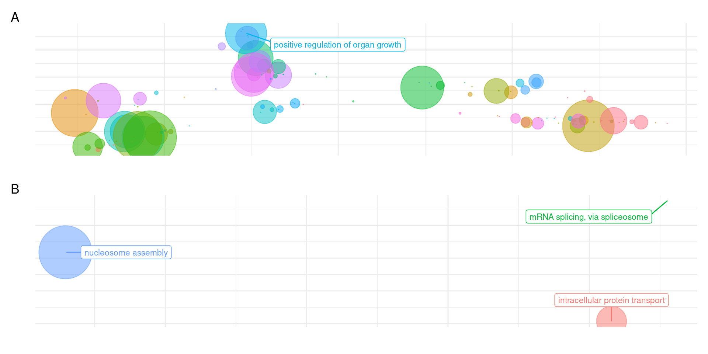
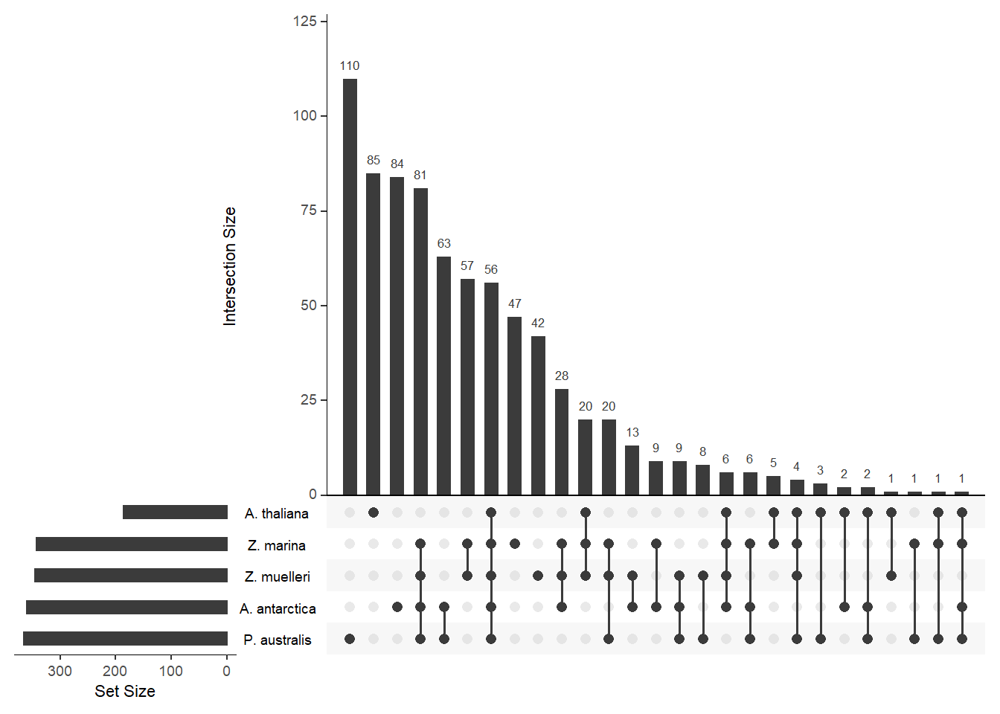
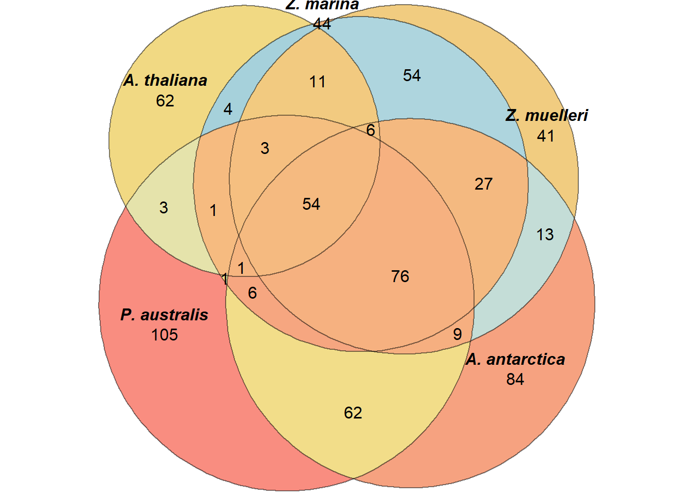

Last updated: 2021-12-20
Checks: 7 0
Knit directory: Amphibolis_Posidonia_Comparison/
This reproducible R Markdown analysis was created with workflowr (version 1.6.2). The Checks tab describes the reproducibility checks that were applied when the results were created. The Past versions tab lists the development history.
Great! Since the R Markdown file has been committed to the Git repository, you know the exact version of the code that produced these results.
Great job! The global environment was empty. Objects defined in the global environment can affect the analysis in your R Markdown file in unknown ways. For reproduciblity it’s best to always run the code in an empty environment.
The command set.seed(20210414) was run prior to running the code in the R Markdown file. Setting a seed ensures that any results that rely on randomness, e.g. subsampling or permutations, are reproducible.
Great job! Recording the operating system, R version, and package versions is critical for reproducibility.
Nice! There were no cached chunks for this analysis, so you can be confident that you successfully produced the results during this run.
Great job! Using relative paths to the files within your workflowr project makes it easier to run your code on other machines.
Great! You are using Git for version control. Tracking code development and connecting the code version to the results is critical for reproducibility.
The results in this page were generated with repository version 21f4c6f. See the Past versions tab to see a history of the changes made to the R Markdown and HTML files.
Note that you need to be careful to ensure that all relevant files for the analysis have been committed to Git prior to generating the results (you can use wflow_publish or wflow_git_commit). workflowr only checks the R Markdown file, but you know if there are other scripts or data files that it depends on. Below is the status of the Git repository when the results were generated:
Ignored files:
Ignored: .Rhistory
Ignored: .Rproj.user/
Ignored: analysis/OTT.nb.html
Ignored: analysis/plotGenes.nb.html
Ignored: analysis/plotRgenes.nb.html
Untracked files:
Untracked: data/Chloroplast_assemblies/
Untracked: output/lost_in_amphi_GO.txt.png
Untracked: output/lost_in_posi_GO.txt.png
Untracked: output/lost_in_zmar_GO.txt.png
Untracked: output/lost_in_zmuel_GO.txt.png
Untracked: output/missing_amphi_vs_all_GO.txt.png
Untracked: output/missing_aquatics_GO.txt.png
Untracked: output/missing_arabidopsis_vs_all_GO.txt.png
Untracked: output/missing_posi_vs_all_GO.txt.png
Untracked: output/missing_seagrasses_GO.txt.png
Untracked: output/missing_zmar_vs_all_GO.txt.png
Untracked: output/missing_zmuel_vs_all_GO.txt.png
Untracked: output/only_in_posi_GO.txt.png
Untracked: output/only_in_zmar_GO.txt.png
Untracked: output/only_in_zmuel_GO.txt.png
Untracked: output/only_seagrasses_GO.txt.png
Unstaged changes:
Modified: analysis/Orthofinder.Rmd
Modified: data/Lost_GO_terms_in_five_species.PlantSpecific.xlsx
Modified: data/Lost_GO_terms_in_five_species.xlsx
Modified: data/shared_lost_genes.xlsx
Note that any generated files, e.g. HTML, png, CSS, etc., are not included in this status report because it is ok for generated content to have uncommitted changes.
These are the previous versions of the repository in which changes were made to the R Markdown (analysis/GOenrichment.Rmd) and HTML (docs/GOenrichment.html) files. If you’ve configured a remote Git repository (see ?wflow_git_remote), click on the hyperlinks in the table below to view the files as they were in that past version.
| File | Version | Author | Date | Message |
|---|---|---|---|---|
| Rmd | 21f4c6f | Philipp Bayer | 2021-12-20 | fix tables again, finally :) haha |
| html | d8ec8d3 | Philipp Bayer | 2021-12-20 | Build site. |
| Rmd | 2fb63eb | Philipp Bayer | 2021-12-20 | fix tables again, finally :) |
| html | cf2e045 | Philipp Bayer | 2021-12-20 | Build site. |
| Rmd | 280fc5d | Philipp Bayer | 2021-12-20 | fix tables again |
| html | 5356e2c | Philipp Bayer | 2021-12-20 | Build site. |
| Rmd | 9f4be6f | Philipp Bayer | 2021-12-20 | fix tables |
| html | 7816b8c | Philipp Bayer | 2021-12-20 | Build site. |
| Rmd | 73bffa4 | Philipp Bayer | 2021-12-20 | add tables |
| html | c1288a4 | Philipp Bayer | 2021-12-20 | Build site. |
| Rmd | 2691cad | Philipp Bayer | 2021-12-20 | add tables |
| html | 292db59 | Philipp Bayer | 2021-10-18 | Build site. |
| Rmd | 35aa72f | Philipp Bayer | 2021-10-18 | wflow_publish(c(“analysis/GOenrichment.Rmd”, “analysis/plotGenes.Rmd”, |
| Rmd | 7e370e9 | Philipp Bayer | 2021-10-07 | Updated GOenrichment |
| Rmd | 95586f9 | Philipp Bayer | 2021-10-07 | Add missing data |
| html | 95586f9 | Philipp Bayer | 2021-10-07 | Add missing data |
| html | c0db4a5 | Philipp Bayer | 2021-10-07 | Build site. |
| Rmd | 08b28ea | Philipp Bayer | 2021-10-07 | wflow_publish(files = c("analysis/*")) |
The GO enrichment does not work well on my laptop so I’m setting this to eval=FALSE and run it on a remote server. The script which writes the input files is a Python script in the scripts/ folder: findClustersUniqueToAquatic.py. This script parses Orthofinder output to pull out genome-specific groups and genes.
# give properly formatted background in format: GO:0005838 GSBRNA2T00088508001;GSBRNA2T00088313001;GSBRNA2T00035842001
#annAT <- readMappings('BACKGROUND.txt.gz', sep="\t", IDsep=";")
#save(annAT, file='annAtObject.RData')
load('annAtObject.RData')
allgenes <- unique(unlist(annAT))
compare <- function(genelistfile, outname, allgenes, annAT) {
# give file with your genes of interest, one gene_id per line
mygenes <-scan(genelistfile ,what="")
geneList <- factor(as.integer(allgenes %in% mygenes))
names(geneList) <- allgenes
GOdata <-new ("topGOdata", ontology = 'BP', allGenes = geneList, nodeSize = 5, annot=annFUN.GO2genes, GO2genes=annAT)
# using ClassicCount:
#test.stat <-new ("classicCount", testStatistic = GOFisherTest, name = "Fisher Test")
#resultsFisherC <-getSigGroups (GOdata, test.stat)
# using weight01:
weight01.fisher <- runTest(GOdata, statistic = "fisher")
# using ClassicCount:
# allRes <- GenTable(GOdata, classicFisher= resultsFisherC, topNodes = 30)
# using weight01:
allRes <- GenTable(GOdata, classicFisher=weight01.fisher,topNodes=30)#,topNodes=100)
names(allRes)[length(allRes)] <- "p.value"
p_values <- score(weight01.fisher)
adjusted_p <- p.adjust(p_values)
adjusted_p[adjusted_p < 0.05] %>% enframe() %>% write_csv('data/' + outname)
}compare('lost_in_amphi_vs_all.txt', 'missing_amphi_vs_all_GO.txt', allgenes, annAT)
compare('lost_in_posi_vs_all.txt', 'missing_posi_vs_all_GO.txt', allgenes, annAT)
compare('lost_in_zmar_vs_all.txt', 'missing_zmar_vs_all_GO.txt', allgenes, annAT)
compare('lost_in_zmuel_vs_all.txt', 'missing_zmuel_vs_all_GO.txt', allgenes, annAT)Here we compare GO terms for seagrasses and aquatics (seagrasses+duckweeds) vs all terrestrials
compare('lost_in_seagrasses.txt', 'missing_seagrasses_GO.txt', allgenes, annAT)
compare('lost_in_aquatics.txt', 'missing_aquatics_GO.txt', allgenes, annAT)
compare('only_in_seagrasses.txt', 'only_seagrasses_GO.txt', allgenes, annAT)Now we compare seagrasses within each other.
For the seagrass-only comparisons, I’m using a Seagrass-only background as that makes more biological sense to me.s
# give properly formatted background in format: GO:0005838 GSBRNA2T00088508001;GSBRNA2T00088313001;GSBRNA2T00035842001
#sannAT <- readMappings('SEAGRASSBACKGROUND.txt', sep="\t", IDsep=";")
#save(sannAT, file='sannAtObject.RData')
load('annAtObject.RData')
sallgenes <- unique(unlist(sannAT))
compare('lost_in_amphi.txt', 'lost_in_amphi_vs_seagrasses_GO.txt', sallgenes, sannAT)
compare('lost_in_posi.txt', 'lost_in_posi_vs_seagrasses_GO.txt', sallgenes, sannAT)
compare('lost_in_zmar.txt', 'lost_in_zmar_vs_seagrasses_GO.txt', sallgenes, sannAT)
compare('lost_in_zmuel.txt', 'lost_in_zmuel_vs_seagrasses_GO.txt', sallgenes, sannAT)The opposite - which GO-terms are present only in one of the four species?
compare('only_in_amphi.txt', 'only_in_amphi_vs_seagrasses_GO.txt', sallgenes, sannAT)
compare('only_in_posi.txt', 'only_in_posi_vs_seagrasses_GO.txt', sallgenes, sannAT)
compare('only_in_zmar.txt', 'only_in_zmar_vs_seagrasses_GO.txt', sallgenes, sannAT)
compare('only_in_zmuel.txt', 'only_in_zmuel_vs_seagrasses_GO.txt', sallgenes, sannAT)Alright now we have all these different GO terms in all these files - we can send them to revigo for visualiation and some deduplication!
This code is based on http://revigo.irb.hr/CodeExamples/revigo.R.txt
results_list <- list()
for (f in list.files('./data/', pattern='GO.txt')){
filename <- paste('./data/', f, sep='')
go_and_pvalues <- readChar(filename, file.info(filename)$size)
go_and_pvalues <- gsub(',', ' ', go_and_pvalues)
httr::POST(
url = "http://revigo.irb.hr/StartJob.aspx",
body = list(
cutoff = "0.7",
valueType = "pvalue",
# speciesTaxon = "4577", # zea mays
#speciesTaxon = '39947', # japonica
speciesTaxon = '3702', # arabidopsis
measure = "SIMREL",
goList = go_and_pvalues
),
# application/x-www-form-urlencoded
encode = "form"
) -> res
dat <- httr::content(res, encoding = "UTF-8")
jobid <- jsonlite::fromJSON(dat,bigint_as_char=TRUE)$jobid
# Check job status
running <- "1"
while (running != "0" ) {
httr::POST(
url = "http://revigo.irb.hr/QueryJobStatus.aspx",
query = list( jobid = jobid )
) -> res2
dat2 <- httr::content(res2, encoding = "UTF-8")
running <- jsonlite::fromJSON(dat2)$running
Sys.sleep(1)
}
# Fetch results
httr::POST(
url = "http://revigo.irb.hr/ExportJob.aspx",
query = list(
jobid = jobid,
namespace = "1",
type = "CSVTable"
)
) -> res3
dat3 <- httr::content(res3, encoding = "UTF-8")
dat3 <- stri_replace_all_fixed(dat3, "\r", "")
# Now we have a csv table in a string!
# read_csv does not like the ', ', it wants ','
dat <- read_csv(gsub(', ', ',', dat3), show_col_types = FALSE)
# do we even have results?
if(nrow(dat) == 0){next}
results_list[[f]] <- dat
}OK we have a list with all results in a big list. Now we can plot!
Let’s also pull these terms out as tables. Value is the unadjusted p-value (-3.7 = 10 * -3.7)
for( i in names(results_list)) {
print(i)
print(knitr::kable(results_list[[i]] %>% filter(Eliminated == FALSE) %>% select(TermID, Name, Value) %>% arrange(Value), caption=i))
cat("\n")
}[1] “lost_in_amphi_GO.txt”
| TermID | Name | Value |
|---|---|---|
| GO:0006278 | RNA-dependent DNA biosynthetic process | -154.570365 |
| GO:0032197 | transposition,RNA-mediated | -153.541147 |
| GO:0090501 | RNA phosphodiester bond hydrolysis | -99.312749 |
| GO:0006508 | proteolysis | -79.607924 |
| GO:0071395 | cellular response to jasmonic acid stimulus | -23.603685 |
| GO:0010726 | positive regulation of hydrogen peroxide metabolic process | -19.887919 |
| GO:0080181 | lateral root branching | -17.324362 |
| GO:0090305 | nucleic acid phosphodiester bond hydrolysis | -16.906247 |
| GO:0010942 | positive regulation of cell death | -14.685584 |
| GO:0009451 | RNA modification | -13.803692 |
| GO:0044245 | polysaccharide digestion | -13.713775 |
| GO:0010337 | regulation of salicylic acid metabolic process | -10.566727 |
| GO:0045962 | positive regulation of development,heterochronic | -9.318720 |
| GO:0006182 | cGMP biosynthetic process | -8.073348 |
| GO:0015709 | thiosulfate transport | -7.854354 |
| GO:0033259 | plastid DNA replication | -7.854354 |
| GO:0070562 | regulation of vitamin D receptor signaling pathway | -6.913688 |
| GO:0048385 | regulation of retinoic acid receptor signaling pathway | -6.913688 |
| GO:0006032 | chitin catabolic process | -6.683057 |
| GO:0080021 | response to benzoic acid | -6.390517 |
| GO:0071465 | cellular response to desiccation | -6.390517 |
| GO:0072488 | ammonium transmembrane transport | -6.112218 |
| GO:0015695 | organic cation transport | -5.943629 |
| GO:0071422 | succinate transmembrane transport | -5.214207 |
| GO:0000350 | generation of catalytic spliceosome for second transesterification step | -4.812729 |
| GO:0006264 | mitochondrial DNA replication | -4.812729 |
| GO:0006334 | nucleosome assembly | -4.587444 |
| GO:0009737 | response to abscisic acid | -3.781098 |
| GO:1904580 | regulation of intracellular mRNA localization | -3.743490 |
| GO:0006275 | regulation of DNA replication | -3.730017 |
| GO:0002229 | defense response to oomycetes | -3.722154 |
| GO:1990481 | mRNA pseudouridine synthesis | -3.677092 |
| GO:0009648 | photoperiodism | -3.590301 |
| GO:0010951 | negative regulation of endopeptidase activity | -3.564044 |
| GO:0016101 | diterpenoid metabolic process | -3.540981 |
| GO:0003094 | glomerular filtration | -3.506441 |
| GO:0034626 | fatty acid elongation,polyunsaturated fatty acid | -3.464066 |
| GO:0080153 | negative regulation of reductive pentose-phosphate cycle | -3.464066 |
| GO:0010555 | response to mannitol | -3.407172 |
| GO:0042178 | xenobiotic catabolic process | -3.362176 |
| GO:0090059 | protoxylem development | -3.236933 |
| GO:0090110 | COPII-coated vesicle cargo loading | -3.236933 |
| GO:0009629 | response to gravity | -3.039850 |
| GO:0048657 | anther wall tapetum cell differentiation | -2.917278 |
| GO:1903335 | regulation of vacuolar transport | -2.864523 |
| GO:0009089 | lysine biosynthetic process via diaminopimelate | -2.699278 |
| GO:0002474 | antigen processing and presentation of peptide antigen via MHC class I | -2.689686 |
| GO:1901333 | positive regulation of lateral root development | -2.689686 |
| GO:0072756 | cellular response to paraquat | -2.168010 |
| GO:0035445 | borate transmembrane transport | -2.035237 |
| GO:0051258 | protein polymerization | -1.810823 |
| GO:2000032 | regulation of secondary shoot formation | -1.698816 |
| GO:0006012 | galactose metabolic process | -1.606369 |
| GO:0009554 | megasporogenesis | -1.321762 |
| GO:0000495 | box H/ACA RNA 3’-end processing | -1.315281 |
| GO:2000636 | positive regulation of primary miRNA processing | -1.315281 |
| GO:0072344 | rescue of stalled ribosome | -1.315281 |
| GO:2000630 | positive regulation of miRNA metabolic process | -1.315281 |
| GO:0070126 | mitochondrial translational termination | -1.315281 |
| GO:0001561 | fatty acid alpha-oxidation | -1.315281 |
| GO:1902609 | (R)-2-hydroxy-alpha-linolenic acid biosynthetic process | -1.315281 |
| GO:0043693 | monoterpene biosynthetic process | -1.315281 |
| GO:0046622 | positive regulation of organ growth | -1.315281 |
[1] “lost_in_posi_GO.txt”
| TermID | Name | Value |
|---|---|---|
| GO:0009451 | RNA modification | -42.299053 |
| GO:0090305 | nucleic acid phosphodiester bond hydrolysis | -40.107639 |
| GO:0071602 | phytosphingosine biosynthetic process | -10.064067 |
| GO:0033485 | cyanidin 3-O-glucoside biosynthetic process | -9.116936 |
| GO:1902184 | negative regulation of shoot apical meristem development | -8.322884 |
| GO:0010064 | embryonic shoot morphogenesis | -6.780537 |
| GO:0018008 | N-terminal peptidyl-glycine N-myristoylation | -6.780537 |
| GO:1904158 | axonemal central apparatus assembly | -6.383832 |
| GO:0052472 | modulation by host of symbiont transcription | -5.743965 |
| GO:0042407 | cristae formation | -5.459308 |
| GO:0050434 | positive regulation of viral transcription | -5.148961 |
| GO:0031098 | stress-activated protein kinase signaling cascade | -4.952222 |
| GO:0033542 | fatty acid beta-oxidation,unsaturated,even number | -4.842284 |
| GO:0042351 | ‘de novo’ GDP-L-fucose biosynthetic process | -4.842284 |
| GO:1904837 | beta-catenin-TCF complex assembly | -4.842284 |
| GO:0046740 | transport of virus in host,cell to cell | -4.842284 |
| GO:0009833 | plant-type primary cell wall biogenesis | -4.679683 |
| GO:0043406 | positive regulation of MAP kinase activity | -4.619586 |
| GO:2000117 | negative regulation of cysteine-type endopeptidase activity | -4.611786 |
| GO:0019471 | 4-hydroxyproline metabolic process | -4.570910 |
| GO:0018401 | peptidyl-proline hydroxylation to 4-hydroxy-L-proline | -4.570910 |
| GO:0048660 | regulation of smooth muscle cell proliferation | -3.111010 |
| GO:0070848 | response to growth factor | -3.109409 |
| GO:0031333 | negative regulation of protein-containing complex assembly | -3.096418 |
| GO:0051131 | chaperone-mediated protein complex assembly | -2.989676 |
| GO:0048658 | anther wall tapetum development | -2.860563 |
| GO:0060776 | simple leaf morphogenesis | -2.475052 |
| GO:0034307 | regulation of ascospore formation | -2.411002 |
| GO:0050728 | negative regulation of inflammatory response | -2.411002 |
| GO:0071507 | pheromone response MAPK cascade | -2.411002 |
| GO:0030244 | cellulose biosynthetic process | -2.313130 |
| GO:1902290 | positive regulation of defense response to oomycetes | -2.284022 |
| GO:0042450 | arginine biosynthetic process via ornithine | -2.239011 |
| GO:0002238 | response to molecule of fungal origin | -2.175661 |
| GO:0010727 | negative regulation of hydrogen peroxide metabolic process | -1.940740 |
| GO:0042353 | fucose biosynthetic process | -1.940740 |
| GO:0006488 | dolichol-linked oligosaccharide biosynthetic process | -1.695773 |
| GO:0009653 | anatomical structure morphogenesis | -1.681340 |
| GO:0010030 | positive regulation of seed germination | -1.592823 |
| GO:0002237 | response to molecule of bacterial origin | -1.494860 |
| GO:0051782 | negative regulation of cell division | -1.358334 |
[1] “lost_in_zmar_GO.txt”
| TermID | Name | Value |
|---|---|---|
| GO:0009083 | branched-chain amino acid catabolic process | -23.825644 |
| GO:1902418 | (+)-abscisic acid D-glucopyranosyl ester transmembrane transport | -16.818712 |
| GO:0015700 | arsenite transport | -13.260514 |
| GO:1901684 | arsenate ion transmembrane transport | -13.048999 |
| GO:0043617 | cellular response to sucrose starvation | -11.063985 |
| GO:1902198 | 3-methylbut-2-enoyl-CoA(4-) metabolic process | -8.703391 |
| GO:1904211 | membrane protein proteolysis involved in retrograde protein transport,ER to cytosol | -8.703391 |
| GO:0009846 | pollen germination | -7.057244 |
| GO:0046685 | response to arsenic-containing substance | -6.914746 |
| GO:1900153 | positive regulation of nuclear-transcribed mRNA catabolic process,deadenylation-dependent decay | -6.908359 |
| GO:0009556 | microsporogenesis | -6.737358 |
| GO:0080037 | negative regulation of cytokinin-activated signaling pathway | -6.440151 |
| GO:1900400 | regulation of iron ion import into cell by regulation of transcription from RNA polymerase II promoter | -6.440151 |
| GO:0007059 | chromosome segregation | -5.880062 |
| GO:0040029 | regulation of gene expression,epigenetic | -5.265680 |
| GO:0043966 | histone H3 acetylation | -5.141144 |
| GO:0106004 | tRNA (guanine-N7)-methylation | -5.114010 |
| GO:1900000 | regulation of anthocyanin catabolic process | -5.114010 |
| GO:0044829 | positive regulation by host of viral genome replication | -5.002696 |
| GO:0051729 | germline cell cycle switching,mitotic to meiotic cell cycle | -5.002696 |
| GO:0007018 | microtubule-based movement | -4.860293 |
| GO:0010104 | regulation of ethylene-activated signaling pathway | -4.578960 |
| GO:0006293 | nucleotide-excision repair,preincision complex stabilization | -3.979599 |
| GO:0000454 | snoRNA guided rRNA pseudouridine synthesis | -3.979599 |
| GO:0006075 | (1->3)-beta-D-glucan biosynthetic process | -3.716869 |
| GO:0032508 | DNA duplex unwinding | -3.700286 |
| GO:1903902 | positive regulation of viral life cycle | -2.883008 |
| GO:0006368 | transcription elongation from RNA polymerase II promoter | -2.824435 |
| GO:0035194 | post-transcriptional gene silencing by RNA | -2.797707 |
| GO:0097502 | mannosylation | -2.726690 |
| GO:0098660 | inorganic ion transmembrane transport | -2.721593 |
| GO:0034333 | adherens junction assembly | -2.627603 |
| GO:0061326 | renal tubule development | -2.627603 |
| GO:0042048 | olfactory behavior | -2.627603 |
| GO:0048599 | oocyte development | -2.568839 |
| GO:0070911 | global genome nucleotide-excision repair | -2.554750 |
| GO:1900150 | regulation of defense response to fungus | -2.374111 |
| GO:0006396 | RNA processing | -2.281902 |
| GO:0055047 | generative cell mitosis | -2.265927 |
| GO:0006337 | nucleosome disassembly | -2.257923 |
| GO:0010199 | organ boundary specification between lateral organs and the meristem | -2.173048 |
| GO:0043524 | negative regulation of neuron apoptotic process | -2.053021 |
| GO:0080092 | regulation of pollen tube growth | -1.916242 |
| GO:0045948 | positive regulation of translational initiation | -1.889705 |
| GO:0006294 | nucleotide-excision repair,preincision complex assembly | -1.668643 |
| GO:0009226 | nucleotide-sugar biosynthetic process | -1.665611 |
| GO:0033234 | negative regulation of protein sumoylation | -1.637393 |
| GO:0042631 | cellular response to water deprivation | -1.383875 |
[1] “lost_in_zmuel_GO.txt”
| TermID | Name | Value |
|---|---|---|
| GO:0006597 | spermine biosynthetic process | -7.719845 |
| GO:0006490 | oligosaccharide-lipid intermediate biosynthetic process | -7.691661 |
| GO:0097502 | mannosylation | -5.271569 |
| GO:0031037 | myosin II filament disassembly | -4.228771 |
| GO:0089709 | L-histidine transmembrane transport | -3.309566 |
| GO:0001841 | neural tube formation | -2.894824 |
| GO:0033577 | protein glycosylation in endoplasmic reticulum | -2.894824 |
| GO:0072488 | ammonium transmembrane transport | -2.416930 |
| GO:0015697 | quaternary ammonium group transport | -2.047144 |
| GO:0010197 | polar nucleus fusion | -1.891385 |
| GO:0042372 | phylloquinone biosynthetic process | -1.854951 |
| GO:0071461 | cellular response to redox state | -1.547943 |
| GO:0090071 | negative regulation of ribosome biogenesis | -1.345457 |
| GO:0015847 | putrescine transport | -1.345457 |
[1] “missing_amphi_vs_all_GO.txt”
| TermID | Name | Value |
|---|---|---|
| GO:0051762 | sesquiterpene biosynthetic process | -155.412480 |
| GO:0090305 | nucleic acid phosphodiester bond hydrolysis | -151.260631 |
| GO:0009451 | RNA modification | -129.609917 |
| GO:0007165 | signal transduction | -124.739426 |
| GO:0044550 | secondary metabolite biosynthetic process | -109.732139 |
| GO:0009626 | plant-type hypersensitive response | -89.199181 |
| GO:0031146 | SCF-dependent proteasomal ubiquitin-dependent protein catabolic process | -73.404016 |
| GO:0010082 | regulation of root meristem growth | -62.316817 |
| GO:2000280 | regulation of root development | -57.962462 |
| GO:0009625 | response to insect | -57.851440 |
| GO:0006952 | defense response | -56.366823 |
| GO:0045926 | negative regulation of growth | -49.287844 |
| GO:0010951 | negative regulation of endopeptidase activity | -49.045011 |
| GO:0045168 | cell-cell signaling involved in cell fate commitment | -40.098376 |
| GO:0016099 | monoterpenoid biosynthetic process | -37.842515 |
| GO:1904526 | regulation of microtubule binding | -36.680089 |
| GO:0000966 | RNA 5’-end processing | -35.554319 |
| GO:0090615 | mitochondrial mRNA processing | -34.637510 |
| GO:0009819 | drought recovery | -33.921860 |
| GO:0000304 | response to singlet oxygen | -31.541887 |
| GO:0016567 | protein ubiquitination | -31.401111 |
| GO:0080027 | response to herbivore | -29.746406 |
| GO:0097366 | response to bronchodilator | -29.267556 |
| GO:0009871 | jasmonic acid and ethylene-dependent systemic resistance,ethylene mediated signaling pathway | -27.782072 |
| GO:0045962 | positive regulation of development,heterochronic | -26.146973 |
| GO:0009969 | xyloglucan biosynthetic process | -25.974199 |
| GO:0071395 | cellular response to jasmonic acid stimulus | -25.690645 |
| GO:0032870 | cellular response to hormone stimulus | -25.204027 |
| GO:0051554 | flavonol metabolic process | -25.072818 |
| GO:0071732 | cellular response to nitric oxide | -24.560403 |
| GO:0048509 | regulation of meristem development | -24.496572 |
| GO:0010310 | regulation of hydrogen peroxide metabolic process | -24.429451 |
| GO:0052544 | defense response by callose deposition in cell wall | -22.469007 |
| GO:0010150 | leaf senescence | -22.322993 |
| GO:0006334 | nucleosome assembly | -22.223748 |
| GO:0045338 | farnesyl diphosphate metabolic process | -20.990397 |
| GO:0071466 | cellular response to xenobiotic stimulus | -20.553402 |
| GO:0048462 | carpel formation | -20.294388 |
| GO:1902025 | nitrate import | -20.184886 |
| GO:0010469 | regulation of signaling receptor activity | -19.981450 |
| GO:0006468 | protein phosphorylation | -19.955290 |
| GO:0071446 | cellular response to salicylic acid stimulus | -19.892445 |
| GO:0009877 | nodulation | -19.544215 |
| GO:0080003 | thalianol metabolic process | -18.906081 |
| GO:0010618 | aerenchyma formation | -17.526209 |
| GO:0015709 | thiosulfate transport | -17.014164 |
| GO:0032350 | regulation of hormone metabolic process | -16.977277 |
| GO:0010375 | stomatal complex patterning | -16.637979 |
| GO:0002230 | positive regulation of defense response to virus by host | -16.511798 |
| GO:0009617 | response to bacterium | -16.475633 |
| GO:0010275 | NAD(P)H dehydrogenase complex assembly | -16.151049 |
| GO:0006885 | regulation of pH | -15.718231 |
| GO:0010233 | phloem transport | -15.280791 |
| GO:0080126 | ovary septum development | -15.121344 |
| GO:0009972 | cytidine deamination | -14.887132 |
| GO:0002239 | response to oomycetes | -14.752078 |
| GO:0061760 | antifungal innate immune response | -14.684490 |
| GO:0036371 | protein localization to T-tubule | -13.799813 |
| GO:1901021 | positive regulation of calcium ion transmembrane transporter activity | -13.799813 |
| GO:0033292 | T-tubule organization | -13.799813 |
| GO:0036309 | protein localization to M-band | -13.799813 |
| GO:0009962 | regulation of flavonoid biosynthetic process | -13.359591 |
| GO:0080143 | regulation of amino acid export | -13.226843 |
| GO:0010942 | positive regulation of cell death | -12.967396 |
| GO:0071236 | cellular response to antibiotic | -12.890584 |
| GO:2000083 | negative regulation of L-ascorbic acid biosynthetic process | -12.868980 |
| GO:0034626 | fatty acid elongation,polyunsaturated fatty acid | -12.617325 |
| GO:0044403 | biological process involved in symbiotic interaction | -12.489256 |
| GO:0061370 | testosterone biosynthetic process | -11.851829 |
| GO:0006812 | cation transport | -11.834559 |
| GO:0042430 | indole-containing compound metabolic process | -11.640271 |
| GO:0051245 | negative regulation of cellular defense response | -11.104116 |
| GO:0034090 | maintenance of meiotic sister chromatid cohesion | -11.006435 |
| GO:0010970 | transport along microtubule | -10.948753 |
| GO:0003341 | cilium movement | -10.740017 |
| GO:0010337 | regulation of salicylic acid metabolic process | -10.612594 |
| GO:0000495 | box H/ACA RNA 3’-end processing | -10.241991 |
| GO:0009609 | response to symbiotic bacterium | -10.155539 |
| GO:0009664 | plant-type cell wall organization | -9.877092 |
| GO:0043153 | entrainment of circadian clock by photoperiod | -9.756528 |
| GO:0071422 | succinate transmembrane transport | -9.471159 |
| GO:1900706 | positive regulation of siderophore biosynthetic process | -9.429721 |
| GO:0035725 | sodium ion transmembrane transport | -9.283878 |
| GO:0006164 | purine nucleotide biosynthetic process | -9.283372 |
| GO:0009311 | oligosaccharide metabolic process | -9.223514 |
| GO:0071452 | cellular response to singlet oxygen | -9.208437 |
| GO:0061723 | glycophagy | -9.144910 |
| GO:0002238 | response to molecule of fungal origin | -8.989515 |
| GO:0009644 | response to high light intensity | -8.889919 |
| GO:0006813 | potassium ion transport | -8.845589 |
| GO:0009961 | response to 1-aminocyclopropane-1-carboxylic acid | -8.733801 |
| GO:1904962 | plastid to vacuole vesicle-mediated transport | -8.533431 |
| GO:0071211 | protein targeting to vacuole involved in autophagy | -8.533431 |
| GO:0015843 | methylammonium transport | -8.488784 |
| GO:0044245 | polysaccharide digestion | -8.477229 |
| GO:0060294 | cilium movement involved in cell motility | -8.400755 |
| GO:0012502 | induction of programmed cell death | -8.366183 |
| GO:0033387 | putrescine biosynthetic process from ornithine | -8.213157 |
| GO:0071368 | cellular response to cytokinin stimulus | -8.168346 |
| GO:0006260 | DNA replication | -8.131429 |
| GO:0042742 | defense response to bacterium | -8.042952 |
| GO:0080184 | response to phenylpropanoid | -8.019366 |
| GO:0010500 | transmitting tissue development | -8.013000 |
| GO:0033259 | plastid DNA replication | -7.843935 |
| GO:0010221 | negative regulation of vernalization response | -7.774115 |
| GO:0010438 | cellular response to sulfur starvation | -7.761069 |
| GO:0090057 | root radial pattern formation | -7.618934 |
| GO:0009684 | indoleacetic acid biosynthetic process | -7.549382 |
| GO:0035998 | 7,8-dihydroneopterin 3’-triphosphate biosynthetic process | -7.547472 |
| GO:1904541 | fungal-type cell wall disassembly involved in conjugation with cellular fusion | -7.425102 |
| GO:0015700 | arsenite transport | -7.398065 |
| GO:0010258 | NADH dehydrogenase complex (plastoquinone) assembly | -7.397841 |
| GO:0071229 | cellular response to acid chemical | -7.395724 |
| GO:0009780 | photosynthetic NADP+ reduction | -7.317334 |
| GO:0010555 | response to mannitol | -7.292125 |
| GO:0009852 | auxin catabolic process | -7.282761 |
| GO:0009093 | cysteine catabolic process | -7.249705 |
| GO:0046330 | positive regulation of JNK cascade | -7.242124 |
| GO:0080037 | negative regulation of cytokinin-activated signaling pathway | -7.201643 |
| GO:0080181 | lateral root branching | -7.129021 |
| GO:1902075 | cellular response to salt | -7.118648 |
| GO:0048767 | root hair elongation | -7.087678 |
| GO:0001680 | tRNA 3’-terminal CCA addition | -7.087420 |
| GO:0032527 | protein exit from endoplasmic reticulum | -7.057949 |
| GO:0001101 | response to acid chemical | -7.032843 |
| GO:0016045 | detection of bacterium | -6.767682 |
| GO:0030639 | polyketide biosynthetic process | -6.693629 |
| GO:0048512 | circadian behavior | -6.692248 |
| GO:2000630 | positive regulation of miRNA metabolic process | -6.661836 |
| GO:0042773 | ATP synthesis coupled electron transport | -6.661836 |
| GO:0001172 | transcription,RNA-templated | -6.630651 |
| GO:0048544 | recognition of pollen | -6.623676 |
| GO:0010376 | stomatal complex formation | -6.623515 |
| GO:0048240 | sperm capacitation | -6.220075 |
| GO:0046622 | positive regulation of organ growth | -6.195458 |
| GO:1902290 | positive regulation of defense response to oomycetes | -6.031032 |
| GO:0006672 | ceramide metabolic process | -5.977702 |
| GO:0072756 | cellular response to paraquat | -5.896024 |
| GO:0080021 | response to benzoic acid | -5.896024 |
| GO:0000375 | RNA splicing,via transesterification reactions | -5.862753 |
| GO:0051070 | galactomannan biosynthetic process | -5.647766 |
| GO:1902265 | abscisic acid homeostasis | -5.647414 |
| GO:0080155 | regulation of double fertilization forming a zygote and endosperm | -5.581798 |
| GO:0010324 | membrane invagination | -5.425451 |
| GO:0006778 | porphyrin-containing compound metabolic process | -5.415218 |
| GO:0007267 | cell-cell signaling | -5.337881 |
| GO:1905255 | regulation of RNA binding transcription factor activity | -5.323769 |
| GO:0070667 | negative regulation of mast cell proliferation | -5.323769 |
| GO:0033007 | negative regulation of mast cell activation involved in immune response | -5.323769 |
| GO:0070562 | regulation of vitamin D receptor signaling pathway | -5.304743 |
| GO:0051258 | protein polymerization | -5.247348 |
| GO:0015851 | nucleobase transport | -5.208378 |
| GO:0018364 | peptidyl-glutamine methylation | -5.201144 |
| GO:0009089 | lysine biosynthetic process via diaminopimelate | -5.170693 |
| GO:0030994 | primary cell septum disassembly | -5.157608 |
| GO:0048385 | regulation of retinoic acid receptor signaling pathway | -5.016143 |
| GO:0009631 | cold acclimation | -4.906945 |
| GO:0071281 | cellular response to iron ion | -4.876646 |
| GO:0032886 | regulation of microtubule-based process | -4.732038 |
| GO:0045056 | transcytosis | -4.682696 |
| GO:0048211 | Golgi vesicle docking | -4.682696 |
| GO:0009608 | response to symbiont | -4.565462 |
| GO:0035864 | response to potassium ion | -4.534107 |
| GO:0007584 | response to nutrient | -4.526773 |
| GO:0036159 | inner dynein arm assembly | -4.478424 |
| GO:0071465 | cellular response to desiccation | -4.454452 |
| GO:0080171 | lytic vacuole organization | -4.451511 |
| GO:0006359 | regulation of transcription by RNA polymerase III | -4.435722 |
| GO:2000636 | positive regulation of primary miRNA processing | -4.418909 |
| GO:0006403 | RNA localization | -4.389670 |
| GO:0080110 | sporopollenin biosynthetic process | -4.321347 |
| GO:0010114 | response to red light | -4.245214 |
| GO:0048587 | regulation of short-day photoperiodism,flowering | -4.157373 |
| GO:0009268 | response to pH | -4.047383 |
| GO:0072344 | rescue of stalled ribosome | -4.047250 |
| GO:0006722 | triterpenoid metabolic process | -3.946282 |
| GO:0045007 | depurination | -3.935188 |
| GO:0015979 | photosynthesis | -3.877351 |
| GO:1905034 | regulation of antifungal innate immune response | -3.767121 |
| GO:1902042 | negative regulation of extrinsic apoptotic signaling pathway via death domain receptors | -3.702997 |
| GO:1900449 | regulation of glutamate receptor signaling pathway | -3.702997 |
| GO:0050821 | protein stabilization | -3.583269 |
| GO:0019218 | regulation of steroid metabolic process | -3.561907 |
| GO:1990169 | stress response to copper ion | -3.561907 |
| GO:0007263 | nitric oxide mediated signal transduction | -3.561389 |
| GO:0007095 | mitotic G2 DNA damage checkpoint signaling | -3.532261 |
| GO:0048584 | positive regulation of response to stimulus | -3.398922 |
| GO:0098869 | cellular oxidant detoxification | -3.378602 |
| GO:0090143 | nucleoid organization | -3.317884 |
| GO:0035246 | peptidyl-arginine N-methylation | -3.309595 |
| GO:0051090 | regulation of DNA-binding transcription factor activity | -3.268476 |
| GO:0016127 | sterol catabolic process | -3.230535 |
| GO:0034434 | sterol esterification | -3.230535 |
| GO:0045490 | pectin catabolic process | -3.160321 |
| GO:0015853 | adenine transport | -3.130204 |
| GO:0031120 | snRNA pseudouridine synthesis | -3.083481 |
| GO:0035024 | negative regulation of Rho protein signal transduction | -2.943564 |
| GO:0080164 | regulation of nitric oxide metabolic process | -2.851155 |
| GO:0090559 | regulation of membrane permeability | -2.849913 |
| GO:0000914 | phragmoplast assembly | -2.811388 |
| GO:0050829 | defense response to Gram-negative bacterium | -2.811388 |
| GO:2000023 | regulation of lateral root development | -2.770101 |
| GO:0009611 | response to wounding | -2.692392 |
| GO:0001561 | fatty acid alpha-oxidation | -2.661712 |
| GO:0019371 | cyclooxygenase pathway | -2.661712 |
| GO:0010423 | negative regulation of brassinosteroid biosynthetic process | -2.632486 |
| GO:0043457 | regulation of cellular respiration | -2.586543 |
| GO:2000013 | regulation of arginine biosynthetic process via ornithine | -2.586543 |
| GO:0034394 | protein localization to cell surface | -2.573966 |
| GO:0010930 | negative regulation of auxin mediated signaling pathway | -2.569735 |
| GO:0006264 | mitochondrial DNA replication | -2.425188 |
| GO:0051607 | defense response to virus | -2.417605 |
| GO:0000226 | microtubule cytoskeleton organization | -2.393661 |
| GO:2000232 | regulation of rRNA processing | -2.371507 |
| GO:0002011 | morphogenesis of an epithelial sheet | -2.355975 |
| GO:0043100 | pyrimidine nucleobase salvage | -2.341970 |
| GO:1902348 | cellular response to strigolactone | -2.194635 |
| GO:0097167 | circadian regulation of translation | -2.194635 |
| GO:0005995 | melibiose catabolic process | -2.194635 |
| GO:0009099 | valine biosynthetic process | -2.075832 |
| GO:0015886 | heme transport | -2.007792 |
| GO:2000028 | regulation of photoperiodism,flowering | -1.891045 |
| GO:0009786 | regulation of asymmetric cell division | -1.856958 |
| GO:0000350 | generation of catalytic spliceosome for second transesterification step | -1.856958 |
| GO:0006124 | ferredoxin metabolic process | -1.836460 |
| GO:0051315 | attachment of mitotic spindle microtubules to kinetochore | -1.830805 |
| GO:0018316 | peptide cross-linking via L-cystine | -1.778525 |
| GO:0006432 | phenylalanyl-tRNA aminoacylation | -1.736491 |
| GO:0046949 | fatty-acyl-CoA biosynthetic process | -1.706168 |
| GO:1901599 | (-)-pinoresinol biosynthetic process | -1.703570 |
| GO:0015708 | silicic acid import across plasma membrane | -1.703570 |
| GO:0030150 | protein import into mitochondrial matrix | -1.657532 |
| GO:0071731 | response to nitric oxide | -1.633238 |
| GO:0009410 | response to xenobiotic stimulus | -1.585466 |
| GO:1901684 | arsenate ion transmembrane transport | -1.535372 |
| GO:0006314 | intron homing | -1.438530 |
| GO:0006203 | dGTP catabolic process | -1.438530 |
| GO:0007166 | cell surface receptor signaling pathway | -1.416541 |
| GO:0035874 | cellular response to copper ion starvation | -1.331841 |
| GO:0000028 | ribosomal small subunit assembly | -1.314658 |
[1] “missing_aquatics_GO.txt”
| TermID | Name | Value |
|---|---|---|
| GO:0051762 | sesquiterpene biosynthetic process | -140.122519 |
| GO:0006952 | defense response | -112.187033 |
| GO:0010082 | regulation of root meristem growth | -104.101084 |
| GO:2000280 | regulation of root development | -81.374590 |
| GO:0007165 | signal transduction | -81.288547 |
| GO:0046345 | abscisic acid catabolic process | -55.983799 |
| GO:0000966 | RNA 5’-end processing | -54.651110 |
| GO:0031146 | SCF-dependent proteasomal ubiquitin-dependent protein catabolic process | -49.521214 |
| GO:0048509 | regulation of meristem development | -47.797196 |
| GO:0045338 | farnesyl diphosphate metabolic process | -40.331178 |
| GO:0051554 | flavonol metabolic process | -36.919497 |
| GO:2000026 | regulation of multicellular organismal development | -35.555401 |
| GO:0010469 | regulation of signaling receptor activity | -34.419769 |
| GO:0009819 | drought recovery | -34.412318 |
| GO:0019756 | cyanogenic glycoside biosynthetic process | -34.342172 |
| GO:0090615 | mitochondrial mRNA processing | -34.286111 |
| GO:0080003 | thalianol metabolic process | -30.502960 |
| GO:0009867 | jasmonic acid mediated signaling pathway | -28.343365 |
| GO:0009617 | response to bacterium | -28.320920 |
| GO:0009625 | response to insect | -27.178894 |
| GO:0016567 | protein ubiquitination | -25.711249 |
| GO:0006468 | protein phosphorylation | -25.501966 |
| GO:0009962 | regulation of flavonoid biosynthetic process | -25.385631 |
| GO:0009626 | plant-type hypersensitive response | -23.662726 |
| GO:0006885 | regulation of pH | -21.919135 |
| GO:0010618 | aerenchyma formation | -20.647083 |
| GO:0036371 | protein localization to T-tubule | -20.442318 |
| GO:0033292 | T-tubule organization | -20.442318 |
| GO:1901021 | positive regulation of calcium ion transmembrane transporter activity | -20.442318 |
| GO:0036309 | protein localization to M-band | -20.442318 |
| GO:0045168 | cell-cell signaling involved in cell fate commitment | -20.327221 |
| GO:2000083 | negative regulation of L-ascorbic acid biosynthetic process | -19.161283 |
| GO:0052544 | defense response by callose deposition in cell wall | -18.498763 |
| GO:0000304 | response to singlet oxygen | -17.925687 |
| GO:0071236 | cellular response to antibiotic | -17.414451 |
| GO:0071368 | cellular response to cytokinin stimulus | -16.910416 |
| GO:0003341 | cilium movement | -16.666473 |
| GO:0060294 | cilium movement involved in cell motility | -16.454330 |
| GO:1902025 | nitrate import | -16.147194 |
| GO:0045926 | negative regulation of growth | -15.727160 |
| GO:0042742 | defense response to bacterium | -15.100075 |
| GO:1902290 | positive regulation of defense response to oomycetes | -14.872143 |
| GO:0097185 | cellular response to azide | -14.134822 |
| GO:0010221 | negative regulation of vernalization response | -13.569914 |
| GO:0080027 | response to herbivore | -13.062940 |
| GO:0080184 | response to phenylpropanoid | -12.881606 |
| GO:0071229 | cellular response to acid chemical | -12.010943 |
| GO:0009871 | jasmonic acid and ethylene-dependent systemic resistance,ethylene mediated signaling pathway | -11.901183 |
| GO:0009684 | indoleacetic acid biosynthetic process | -11.837791 |
| GO:0009852 | auxin catabolic process | -11.473243 |
| GO:0010942 | positive regulation of cell death | -10.877695 |
| GO:0036159 | inner dynein arm assembly | -10.806071 |
| GO:0010114 | response to red light | -10.626773 |
| GO:0071766 | Actinobacterium-type cell wall biogenesis | -10.192160 |
| GO:1904526 | regulation of microtubule binding | -9.815879 |
| GO:0071466 | cellular response to xenobiotic stimulus | -9.352212 |
| GO:0007166 | cell surface receptor signaling pathway | -9.350409 |
| GO:0009410 | response to xenobiotic stimulus | -9.193698 |
| GO:1905255 | regulation of RNA binding transcription factor activity | -9.134702 |
| GO:0006812 | cation transport | -8.598854 |
| GO:0035024 | negative regulation of Rho protein signal transduction | -8.593483 |
| GO:0009914 | hormone transport | -8.520136 |
| GO:0010930 | negative regulation of auxin mediated signaling pathway | -8.423030 |
| GO:0034394 | protein localization to cell surface | -8.422620 |
| GO:0001101 | response to acid chemical | -8.247666 |
| GO:0002213 | defense response to insect | -8.013172 |
| GO:0070301 | cellular response to hydrogen peroxide | -7.747259 |
| GO:0002011 | morphogenesis of an epithelial sheet | -7.657648 |
| GO:0009611 | response to wounding | -7.598088 |
| GO:0032870 | cellular response to hormone stimulus | -7.407748 |
| GO:0016045 | detection of bacterium | -7.398400 |
| GO:1902042 | negative regulation of extrinsic apoptotic signaling pathway via death domain receptors | -7.135037 |
| GO:1900449 | regulation of glutamate receptor signaling pathway | -7.135037 |
| GO:1902265 | abscisic acid homeostasis | -7.025493 |
| GO:0010030 | positive regulation of seed germination | -6.951280 |
| GO:0003283 | atrial septum development | -6.840108 |
| GO:0097237 | cellular response to toxic substance | -6.813398 |
| GO:0009865 | pollen tube adhesion | -5.970647 |
| GO:0090559 | regulation of membrane permeability | -5.932708 |
| GO:0051607 | defense response to virus | -5.648221 |
| GO:0009866 | induced systemic resistance,ethylene mediated signaling pathway | -5.551154 |
| GO:0097167 | circadian regulation of translation | -5.541363 |
| GO:0007584 | response to nutrient | -5.303508 |
| GO:0010310 | regulation of hydrogen peroxide metabolic process | -5.241183 |
| GO:0007267 | cell-cell signaling | -4.559472 |
| GO:0009826 | unidimensional cell growth | -4.543084 |
| GO:0071218 | cellular response to misfolded protein | -4.517344 |
| GO:0009311 | oligosaccharide metabolic process | -4.513778 |
| GO:0010233 | phloem transport | -4.279925 |
| GO:0061157 | mRNA destabilization | -4.106738 |
| GO:0010438 | cellular response to sulfur starvation | -3.856586 |
| GO:0015708 | silicic acid import across plasma membrane | -3.788987 |
| GO:0050821 | protein stabilization | -3.614097 |
| GO:0007498 | mesoderm development | -3.610872 |
| GO:0007422 | peripheral nervous system development | -3.610872 |
| GO:0031542 | positive regulation of anthocyanin biosynthetic process | -3.567657 |
| GO:0006335 | DNA replication-dependent chromatin assembly | -3.563722 |
| GO:0009745 | sucrose mediated signaling | -3.552022 |
| GO:0032504 | multicellular organism reproduction | -3.443456 |
| GO:0035600 | tRNA methylthiolation | -3.409318 |
| GO:0002239 | response to oomycetes | -3.344113 |
| GO:1905614 | negative regulation of developmental vegetative growth | -3.116242 |
| GO:0051513 | regulation of monopolar cell growth | -2.998690 |
| GO:0032527 | protein exit from endoplasmic reticulum | -2.917539 |
| GO:0010305 | leaf vascular tissue pattern formation | -2.850372 |
| GO:0097503 | sialylation | -2.841938 |
| GO:0002230 | positive regulation of defense response to virus by host | -2.703275 |
| GO:0006636 | unsaturated fatty acid biosynthetic process | -2.644815 |
| GO:0009751 | response to salicylic acid | -2.619993 |
| GO:0006898 | receptor-mediated endocytosis | -2.571880 |
| GO:0031640 | killing of cells of other organism | -2.509567 |
| GO:0048312 | intracellular distribution of mitochondria | -2.509467 |
| GO:1903553 | positive regulation of extracellular exosome assembly | -2.509467 |
| GO:0044364 | disruption of cells of other organism | -2.509467 |
| GO:0007492 | endoderm development | -2.509467 |
| GO:0060465 | pharynx development | -2.509467 |
| GO:0072498 | embryonic skeletal joint development | -2.509467 |
| GO:0048265 | response to pain | -2.509467 |
| GO:0006355 | regulation of transcription,DNA-templated | -2.480747 |
| GO:0045314 | regulation of compound eye photoreceptor development | -2.388180 |
| GO:0045747 | positive regulation of Notch signaling pathway | -2.388180 |
| GO:0007398 | ectoderm development | -2.388180 |
| GO:0035204 | negative regulation of lamellocyte differentiation | -2.388180 |
| GO:0048821 | erythrocyte development | -2.384487 |
| GO:0042177 | negative regulation of protein catabolic process | -2.367953 |
| GO:0001666 | response to hypoxia | -2.354401 |
| GO:0007369 | gastrulation | -2.330386 |
| GO:2000027 | regulation of animal organ morphogenesis | -2.298305 |
| GO:1905663 | positive regulation of telomerase RNA reverse transcriptase activity | -2.276294 |
| GO:0019722 | calcium-mediated signaling | -2.188992 |
| GO:0009960 | endosperm development | -2.180950 |
| GO:0009627 | systemic acquired resistance | -2.073394 |
| GO:0031347 | regulation of defense response | -2.037689 |
| GO:0043086 | negative regulation of catalytic activity | -1.980503 |
| GO:0010275 | NAD(P)H dehydrogenase complex assembly | -1.784576 |
| GO:0009828 | plant-type cell wall loosening | -1.774122 |
| GO:1900745 | positive regulation of p38MAPK cascade | -1.752952 |
| GO:1904355 | positive regulation of telomere capping | -1.727692 |
| GO:0010150 | leaf senescence | -1.519786 |
| GO:0036092 | phosphatidylinositol-3-phosphate biosynthetic process | -1.513457 |
| GO:0046482 | para-aminobenzoic acid metabolic process | -1.352411 |
[1] “missing_arabidopsis_vs_all_GO.txt”
| TermID | Name | Value |
|---|---|---|
| GO:0007165 | signal transduction | -119.239761 |
| GO:0006952 | defense response | -96.210331 |
| GO:0045926 | negative regulation of growth | -75.159828 |
| GO:1904526 | regulation of microtubule binding | -61.579741 |
| GO:0006468 | protein phosphorylation | -44.190986 |
| GO:0009819 | drought recovery | -31.057832 |
| GO:0010083 | regulation of vegetative meristem growth | -25.517715 |
| GO:0009617 | response to bacterium | -23.613172 |
| GO:0031146 | SCF-dependent proteasomal ubiquitin-dependent protein catabolic process | -23.559069 |
| GO:0000226 | microtubule cytoskeleton organization | -21.958043 |
| GO:0009626 | plant-type hypersensitive response | -20.800214 |
| GO:0060294 | cilium movement involved in cell motility | -19.092525 |
| GO:0003341 | cilium movement | -17.515455 |
| GO:0000966 | RNA 5’-end processing | -16.663352 |
| GO:1901949 | 5alpha,9alpha,10beta-labda-8(20),13-dien-15-yl diphosphate biosynthetic process | -14.605293 |
| GO:0033387 | putrescine biosynthetic process from ornithine | -13.401532 |
| GO:0036159 | inner dynein arm assembly | -13.046176 |
| GO:0016045 | detection of bacterium | -12.125293 |
| GO:0009410 | response to xenobiotic stimulus | -11.386409 |
| GO:0009877 | nodulation | -11.377572 |
| GO:0071766 | Actinobacterium-type cell wall biogenesis | -10.738963 |
| GO:0010233 | phloem transport | -10.718896 |
| GO:0044403 | biological process involved in symbiotic interaction | -9.395802 |
| GO:0010359 | regulation of anion channel activity | -9.197787 |
| GO:0009690 | cytokinin metabolic process | -8.510983 |
| GO:0016567 | protein ubiquitination | -8.233559 |
| GO:0090615 | mitochondrial mRNA processing | -8.152980 |
| GO:0009311 | oligosaccharide metabolic process | -7.895729 |
| GO:1902042 | negative regulation of extrinsic apoptotic signaling pathway via death domain receptors | -7.626170 |
| GO:0071447 | cellular response to hydroperoxide | -7.626170 |
| GO:1900449 | regulation of glutamate receptor signaling pathway | -7.626170 |
| GO:0010305 | leaf vascular tissue pattern formation | -7.541784 |
| GO:0046777 | protein autophosphorylation | -7.305555 |
| GO:0009608 | response to symbiont | -7.017275 |
| GO:0052544 | defense response by callose deposition in cell wall | -6.905833 |
| GO:0009742 | brassinosteroid mediated signaling pathway | -6.885721 |
| GO:2000023 | regulation of lateral root development | -6.604582 |
| GO:0044550 | secondary metabolite biosynthetic process | -6.590408 |
| GO:0015939 | pantothenate metabolic process | -6.369773 |
| GO:0030240 | skeletal muscle thin filament assembly | -6.369436 |
| GO:0006898 | receptor-mediated endocytosis | -6.047190 |
| GO:0007369 | gastrulation | -5.952804 |
| GO:0032504 | multicellular organism reproduction | -5.880605 |
| GO:0042742 | defense response to bacterium | -5.879025 |
| GO:0090708 | specification of plant organ axis polarity | -5.847839 |
| GO:1902025 | nitrate import | -5.828260 |
| GO:0007166 | cell surface receptor signaling pathway | -5.354689 |
| GO:2000280 | regulation of root development | -5.252086 |
| GO:0048509 | regulation of meristem development | -5.238104 |
| GO:0009734 | auxin-activated signaling pathway | -5.072313 |
| GO:0061157 | mRNA destabilization | -4.943818 |
| GO:1903224 | regulation of endodermal cell differentiation | -4.810111 |
| GO:0010470 | regulation of gastrulation | -4.810111 |
| GO:0045184 | establishment of protein localization | -4.787121 |
| GO:0051967 | negative regulation of synaptic transmission,glutamatergic | -4.712564 |
| GO:0001701 | in utero embryonic development | -4.688566 |
| GO:0048439 | flower morphogenesis | -4.558133 |
| GO:0072699 | protein localization to cortical microtubule cytoskeleton | -4.555906 |
| GO:0009733 | response to auxin | -4.547141 |
| GO:0019878 | lysine biosynthetic process via aminoadipic acid | -4.260093 |
| GO:0007275 | multicellular organism development | -4.193035 |
| GO:0006335 | DNA replication-dependent chromatin assembly | -4.150067 |
| GO:0009745 | sucrose mediated signaling | -4.100581 |
| GO:0015708 | silicic acid import across plasma membrane | -4.085583 |
| GO:0010150 | leaf senescence | -4.016755 |
| GO:0035600 | tRNA methylthiolation | -3.993292 |
| GO:0035024 | negative regulation of Rho protein signal transduction | -3.841743 |
| GO:0006336 | DNA replication-independent chromatin assembly | -3.787082 |
| GO:0098657 | import into cell | -3.726525 |
| GO:0031542 | positive regulation of anthocyanin biosynthetic process | -3.627182 |
| GO:0035864 | response to potassium ion | -3.561205 |
| GO:0097503 | sialylation | -3.416393 |
| GO:0051513 | regulation of monopolar cell growth | -3.381197 |
| GO:0009826 | unidimensional cell growth | -3.368105 |
| GO:0007178 | transmembrane receptor protein serine/threonine kinase signaling pathway | -3.010935 |
| GO:0007339 | binding of sperm to zona pellucida | -2.995739 |
| GO:0002011 | morphogenesis of an epithelial sheet | -2.995739 |
| GO:0010114 | response to red light | -2.973863 |
| GO:0006486 | protein glycosylation | -2.967523 |
| GO:0031589 | cell-substrate adhesion | -2.835492 |
| GO:0101030 | tRNA-guanine transglycosylation | -2.835031 |
| GO:0009828 | plant-type cell wall loosening | -2.793297 |
| GO:0007492 | endoderm development | -2.758626 |
| GO:0031640 | killing of cells of other organism | -2.756107 |
| GO:0048312 | intracellular distribution of mitochondria | -2.755929 |
| GO:0044364 | disruption of cells of other organism | -2.755929 |
| GO:0060465 | pharynx development | -2.755929 |
| GO:0043588 | skin development | -2.755929 |
| GO:0090558 | plant epidermis development | -2.738830 |
| GO:0048821 | erythrocyte development | -2.676151 |
| GO:0097306 | cellular response to alcohol | -2.674237 |
| GO:0015969 | guanosine tetraphosphate metabolic process | -2.627528 |
| GO:0009962 | regulation of flavonoid biosynthetic process | -2.600440 |
| GO:0009251 | glucan catabolic process | -2.365504 |
| GO:0010737 | protein kinase A signaling | -2.293020 |
| GO:0009992 | cellular water homeostasis | -2.289354 |
| GO:0014013 | regulation of gliogenesis | -2.217819 |
| GO:0009867 | jasmonic acid mediated signaling pathway | -2.146426 |
| GO:0042761 | very long-chain fatty acid biosynthetic process | -2.053810 |
| GO:0007349 | cellularization | -1.998218 |
| GO:0036498 | IRE1-mediated unfolded protein response | -1.997416 |
| GO:1900745 | positive regulation of p38MAPK cascade | -1.997416 |
| GO:0046482 | para-aminobenzoic acid metabolic process | -1.986689 |
| GO:0045730 | respiratory burst | -1.825271 |
| GO:0080051 | cutin transport | -1.773667 |
| GO:0060548 | negative regulation of cell death | -1.766217 |
| GO:0006627 | protein processing involved in protein targeting to mitochondrion | -1.720248 |
| GO:0045056 | transcytosis | -1.617946 |
| GO:0048211 | Golgi vesicle docking | -1.617946 |
| GO:0061820 | telomeric D-loop disassembly | -1.596827 |
| GO:0098530 | positive regulation of strand invasion | -1.596827 |
| GO:0044806 | G-quadruplex DNA unwinding | -1.596827 |
| GO:0071921 | cohesin loading | -1.496974 |
| GO:0031065 | positive regulation of histone deacetylation | -1.496974 |
| GO:0060325 | face morphogenesis | -1.496974 |
| GO:0032526 | response to retinoic acid | -1.471984 |
| GO:0008610 | lipid biosynthetic process | -1.447198 |
| GO:0002182 | cytoplasmic translational elongation | -1.428299 |
| GO:0009218 | pyrimidine ribonucleotide metabolic process | -1.426628 |
| GO:1904851 | positive regulation of establishment of protein localization to telomere | -1.379635 |
[1] “missing_posi_vs_all_GO.txt”
| TermID | Name | Value |
|---|---|---|
| GO:0090305 | nucleic acid phosphodiester bond hydrolysis | -202.077576 |
| GO:0009451 | RNA modification | -190.721643 |
| GO:0051762 | sesquiterpene biosynthetic process | -100.297555 |
| GO:0007165 | signal transduction | -63.045228 |
| GO:0031146 | SCF-dependent proteasomal ubiquitin-dependent protein catabolic process | -62.059796 |
| GO:0045926 | negative regulation of growth | -56.870827 |
| GO:0006952 | defense response | -56.039009 |
| GO:0010082 | regulation of root meristem growth | -54.195293 |
| GO:2000280 | regulation of root development | -53.716023 |
| GO:1904526 | regulation of microtubule binding | -40.641336 |
| GO:0000966 | RNA 5’-end processing | -40.450386 |
| GO:0009819 | drought recovery | -39.762484 |
| GO:0046345 | abscisic acid catabolic process | -35.511723 |
| GO:0010469 | regulation of signaling receptor activity | -34.558948 |
| GO:0010375 | stomatal complex patterning | -33.754478 |
| GO:0080156 | mitochondrial mRNA modification | -30.657427 |
| GO:0010881 | regulation of cardiac muscle contraction by regulation of the release of sequestered calcium ion | -28.972157 |
| GO:0051554 | flavonol metabolic process | -27.259447 |
| GO:0019756 | cyanogenic glycoside biosynthetic process | -25.518707 |
| GO:0009969 | xyloglucan biosynthetic process | -24.960744 |
| GO:0045338 | farnesyl diphosphate metabolic process | -24.428219 |
| GO:0006468 | protein phosphorylation | -23.861870 |
| GO:0010233 | phloem transport | -23.811719 |
| GO:1902025 | nitrate import | -22.839119 |
| GO:0048462 | carpel formation | -22.697279 |
| GO:0045168 | cell-cell signaling involved in cell fate commitment | -22.581085 |
| GO:0048509 | regulation of meristem development | -21.686326 |
| GO:0080003 | thalianol metabolic process | -21.022129 |
| GO:0009914 | hormone transport | -20.141593 |
| GO:0016567 | protein ubiquitination | -19.832729 |
| GO:0006885 | regulation of pH | -19.750916 |
| GO:0010275 | NAD(P)H dehydrogenase complex assembly | -18.708367 |
| GO:1905614 | negative regulation of developmental vegetative growth | -18.376548 |
| GO:0031098 | stress-activated protein kinase signaling cascade | -17.979816 |
| GO:0080126 | ovary septum development | -16.865539 |
| GO:0009972 | cytidine deamination | -16.574468 |
| GO:0009626 | plant-type hypersensitive response | -16.522254 |
| GO:1902457 | negative regulation of stomatal opening | -16.296225 |
| GO:0010344 | seed oilbody biogenesis | -16.161163 |
| GO:0009625 | response to insect | -15.643489 |
| GO:0071236 | cellular response to antibiotic | -15.558175 |
| GO:0060776 | simple leaf morphogenesis | -15.554054 |
| GO:0036371 | protein localization to T-tubule | -15.023967 |
| GO:0033292 | T-tubule organization | -15.023967 |
| GO:0036309 | protein localization to M-band | -15.023967 |
| GO:0035725 | sodium ion transmembrane transport | -14.994073 |
| GO:0010618 | aerenchyma formation | -14.702027 |
| GO:0034614 | cellular response to reactive oxygen species | -14.569446 |
| GO:0009962 | regulation of flavonoid biosynthetic process | -14.549538 |
| GO:0009867 | jasmonic acid mediated signaling pathway | -14.238823 |
| GO:2000083 | negative regulation of L-ascorbic acid biosynthetic process | -14.028558 |
| GO:0032260 | response to jasmonic acid stimulus involved in jasmonic acid and ethylene-dependent systemic resistance | -13.981089 |
| GO:0048767 | root hair elongation | -13.755379 |
| GO:1900426 | positive regulation of defense response to bacterium | -13.256654 |
| GO:0042176 | regulation of protein catabolic process | -12.811444 |
| GO:0042273 | ribosomal large subunit biogenesis | -12.711372 |
| GO:0048658 | anther wall tapetum development | -12.553830 |
| GO:0034724 | DNA replication-independent chromatin organization | -12.343109 |
| GO:0033206 | meiotic cytokinesis | -12.323855 |
| GO:0003341 | cilium movement | -11.828706 |
| GO:0071320 | cellular response to cAMP | -11.821209 |
| GO:2000026 | regulation of multicellular organismal development | -11.646700 |
| GO:0050434 | positive regulation of viral transcription | -11.444585 |
| GO:0009653 | anatomical structure morphogenesis | -11.417696 |
| GO:0000226 | microtubule cytoskeleton organization | -11.150007 |
| GO:0043153 | entrainment of circadian clock by photoperiod | -11.106471 |
| GO:0050728 | negative regulation of inflammatory response | -11.106471 |
| GO:0006509 | membrane protein ectodomain proteolysis | -10.923143 |
| GO:0035902 | response to immobilization stress | -10.850181 |
| GO:0009311 | oligosaccharide metabolic process | -10.336692 |
| GO:0009617 | response to bacterium | -10.289218 |
| GO:0006813 | potassium ion transport | -10.222966 |
| GO:0007346 | regulation of mitotic cell cycle | -10.155337 |
| GO:0010500 | transmitting tissue development | -10.077522 |
| GO:1900033 | negative regulation of trichome patterning | -9.916671 |
| GO:0030150 | protein import into mitochondrial matrix | -9.888893 |
| GO:0060291 | long-term synaptic potentiation | -9.880986 |
| GO:0098703 | calcium ion import across plasma membrane | -9.880986 |
| GO:0071368 | cellular response to cytokinin stimulus | -9.739302 |
| GO:0010030 | positive regulation of seed germination | -9.733717 |
| GO:0001667 | ameboidal-type cell migration | -9.728819 |
| GO:2000117 | negative regulation of cysteine-type endopeptidase activity | -9.726094 |
| GO:0046330 | positive regulation of JNK cascade | -9.722158 |
| GO:2000762 | regulation of phenylpropanoid metabolic process | -9.682429 |
| GO:0012502 | induction of programmed cell death | -9.431784 |
| GO:0071347 | cellular response to interleukin-1 | -9.101635 |
| GO:0080037 | negative regulation of cytokinin-activated signaling pathway | -9.070433 |
| GO:0033387 | putrescine biosynthetic process from ornithine | -9.050561 |
| GO:0032527 | protein exit from endoplasmic reticulum | -8.961732 |
| GO:0080184 | response to phenylpropanoid | -8.913764 |
| GO:0010221 | negative regulation of vernalization response | -8.832352 |
| GO:1904837 | beta-catenin-TCF complex assembly | -8.582182 |
| GO:0071229 | cellular response to acid chemical | -8.441768 |
| GO:0009088 | threonine biosynthetic process | -8.292342 |
| GO:0009780 | photosynthetic NADP+ reduction | -8.261077 |
| GO:0033542 | fatty acid beta-oxidation,unsaturated,even number | -8.187130 |
| GO:0010150 | leaf senescence | -8.133262 |
| GO:0009852 | auxin catabolic process | -8.055166 |
| GO:0042773 | ATP synthesis coupled electron transport | -7.751660 |
| GO:0006812 | cation transport | -7.647909 |
| GO:0080155 | regulation of double fertilization forming a zygote and endosperm | -7.626381 |
| GO:0050826 | response to freezing | -7.571291 |
| GO:1902265 | abscisic acid homeostasis | -7.364876 |
| GO:0042407 | cristae formation | -7.288255 |
| GO:0002213 | defense response to insect | -7.205055 |
| GO:0048240 | sperm capacitation | -6.984336 |
| GO:0030198 | extracellular matrix organization | -6.950692 |
| GO:0000375 | RNA splicing,via transesterification reactions | -6.872762 |
| GO:0018008 | N-terminal peptidyl-glycine N-myristoylation | -6.862429 |
| GO:0010064 | embryonic shoot morphogenesis | -6.862429 |
| GO:2000038 | regulation of stomatal complex development | -6.601214 |
| GO:0051070 | galactomannan biosynthetic process | -6.568896 |
| GO:0000390 | spliceosomal complex disassembly | -6.520794 |
| GO:0010227 | floral organ abscission | -6.507642 |
| GO:0002238 | response to molecule of fungal origin | -6.476875 |
| GO:0010942 | positive regulation of cell death | -6.291367 |
| GO:0010324 | membrane invagination | -6.184266 |
| GO:0006778 | porphyrin-containing compound metabolic process | -6.174433 |
| GO:0015851 | nucleobase transport | -6.123632 |
| GO:0030994 | primary cell septum disassembly | -6.121054 |
| GO:0071466 | cellular response to xenobiotic stimulus | -6.082287 |
| GO:1905255 | regulation of RNA binding transcription factor activity | -6.024302 |
| GO:0070667 | negative regulation of mast cell proliferation | -6.024302 |
| GO:0033007 | negative regulation of mast cell activation involved in immune response | -6.024302 |
| GO:0009664 | plant-type cell wall organization | -5.970664 |
| GO:0048211 | Golgi vesicle docking | -5.955050 |
| GO:0045056 | transcytosis | -5.955050 |
| GO:0042908 | xenobiotic transport | -5.906055 |
| GO:0043086 | negative regulation of catalytic activity | -5.846133 |
| GO:0006005 | L-fucose biosynthetic process | -5.700801 |
| GO:0002938 | tRNA guanine ribose methylation | -5.700801 |
| GO:0052544 | defense response by callose deposition in cell wall | -5.613441 |
| GO:0001172 | transcription,RNA-templated | -5.524972 |
| GO:0048544 | recognition of pollen | -5.518977 |
| GO:0010310 | regulation of hydrogen peroxide metabolic process | -5.432629 |
| GO:0035864 | response to potassium ion | -5.334631 |
| GO:0006359 | regulation of transcription by RNA polymerase III | -5.285495 |
| GO:1900459 | positive regulation of brassinosteroid mediated signaling pathway | -5.248078 |
| GO:0006470 | protein dephosphorylation | -5.193447 |
| GO:1904541 | fungal-type cell wall disassembly involved in conjugation with cellular fusion | -5.079019 |
| GO:0007066 | female meiosis sister chromatid cohesion | -5.070379 |
| GO:0031333 | negative regulation of protein-containing complex assembly | -5.068979 |
| GO:0042073 | intraciliary transport | -5.067553 |
| GO:0034080 | CENP-A containing chromatin assembly | -5.066592 |
| GO:0045007 | depurination | -5.052084 |
| GO:1905034 | regulation of antifungal innate immune response | -5.043818 |
| GO:0009268 | response to pH | -4.887249 |
| GO:0000025 | maltose catabolic process | -4.860108 |
| GO:0051607 | defense response to virus | -4.801239 |
| GO:0015700 | arsenite transport | -4.650523 |
| GO:0010120 | camalexin biosynthetic process | -4.492216 |
| GO:0015853 | adenine transport | -4.452453 |
| GO:0034434 | sterol esterification | -4.442857 |
| GO:0051782 | negative regulation of cell division | -4.382314 |
| GO:1902042 | negative regulation of extrinsic apoptotic signaling pathway via death domain receptors | -4.331802 |
| GO:1900449 | regulation of glutamate receptor signaling pathway | -4.331802 |
| GO:0045861 | negative regulation of proteolysis | -4.202439 |
| GO:0000028 | ribosomal small subunit assembly | -4.099637 |
| GO:0019218 | regulation of steroid metabolic process | -4.076369 |
| GO:0090143 | nucleoid organization | -4.046449 |
| GO:0034307 | regulation of ascospore formation | -4.046449 |
| GO:0007166 | cell surface receptor signaling pathway | -3.979747 |
| GO:0035024 | negative regulation of Rho protein signal transduction | -3.940235 |
| GO:1900865 | chloroplast RNA modification | -3.916060 |
| GO:1902325 | negative regulation of chlorophyll biosynthetic process | -3.756088 |
| GO:0010727 | negative regulation of hydrogen peroxide metabolic process | -3.745360 |
| GO:0070846 | Hsp90 deacetylation | -3.744559 |
| GO:0032418 | lysosome localization | -3.744559 |
| GO:1901526 | positive regulation of mitophagy | -3.744559 |
| GO:0061734 | parkin-mediated stimulation of mitophagy in response to mitochondrial depolarization | -3.744559 |
| GO:0035967 | cellular response to topologically incorrect protein | -3.743924 |
| GO:2001040 | positive regulation of cellular response to drug | -3.743868 |
| GO:0070848 | response to growth factor | -3.742023 |
| GO:0070134 | positive regulation of mitochondrial translational initiation | -3.636248 |
| GO:0034394 | protein localization to cell surface | -3.600617 |
| GO:0010930 | negative regulation of auxin mediated signaling pathway | -3.593907 |
| GO:1902184 | negative regulation of shoot apical meristem development | -3.583883 |
| GO:0042351 | ‘de novo’ GDP-L-fucose biosynthetic process | -3.583883 |
| GO:0050821 | protein stabilization | -3.421658 |
| GO:0080164 | regulation of nitric oxide metabolic process | -3.416873 |
| GO:0090559 | regulation of membrane permeability | -3.415678 |
| GO:0071731 | response to nitric oxide | -3.335147 |
| GO:0043457 | regulation of cellular respiration | -3.301968 |
| GO:0006045 | N-acetylglucosamine biosynthetic process | -3.301968 |
| GO:0002011 | morphogenesis of an epithelial sheet | -3.289730 |
| GO:1901684 | arsenate ion transmembrane transport | -3.269484 |
| GO:0018063 | cytochrome c-heme linkage | -3.227392 |
| GO:0097237 | cellular response to toxic substance | -3.138372 |
| GO:0080163 | regulation of protein serine/threonine phosphatase activity | -3.131269 |
| GO:0010423 | negative regulation of brassinosteroid biosynthetic process | -3.083357 |
| GO:0016045 | detection of bacterium | -3.008507 |
| GO:2000033 | regulation of seed dormancy process | -2.985810 |
| GO:0030587 | sorocarp development | -2.979628 |
| GO:0007023 | post-chaperonin tubulin folding pathway | -2.977004 |
| GO:0050935 | iridophore differentiation | -2.977004 |
| GO:0009410 | response to xenobiotic stimulus | -2.970613 |
| GO:0080027 | response to herbivore | -2.945089 |
| GO:0019348 | dolichol metabolic process | -2.857557 |
| GO:0097167 | circadian regulation of translation | -2.803332 |
| GO:0009631 | cold acclimation | -2.700705 |
| GO:0006970 | response to osmotic stress | -2.680020 |
| GO:0045815 | epigenetic maintenance of chromatin in transcription-competent conformation | -2.677396 |
| GO:0048439 | flower morphogenesis | -2.532840 |
| GO:2000098 | negative regulation of smooth muscle cell-matrix adhesion | -2.526602 |
| GO:0042308 | negative regulation of protein import into nucleus | -2.526602 |
| GO:0010642 | negative regulation of platelet-derived growth factor receptor signaling pathway | -2.526602 |
| GO:0015886 | heme transport | -2.509303 |
| GO:0046949 | fatty-acyl-CoA biosynthetic process | -2.400073 |
| GO:0010365 | positive regulation of ethylene biosynthetic process | -2.346859 |
| GO:0010842 | retina layer formation | -2.222439 |
| GO:0040011 | locomotion | -2.110800 |
| GO:0070121 | Kupffer’s vesicle development | -2.089786 |
| GO:1901599 | (-)-pinoresinol biosynthetic process | -2.089786 |
| GO:0006611 | protein export from nucleus | -2.080898 |
| GO:0061614 | pri-miRNA transcription by RNA polymerase II | -2.077188 |
| GO:0006203 | dGTP catabolic process | -1.983263 |
| GO:0071289 | cellular response to nickel ion | -1.958210 |
| GO:0051211 | anisotropic cell growth | -1.813416 |
| GO:0009992 | cellular water homeostasis | -1.795237 |
| GO:0015979 | photosynthesis | -1.786708 |
| GO:0009734 | auxin-activated signaling pathway | -1.757187 |
| GO:0009961 | response to 1-aminocyclopropane-1-carboxylic acid | -1.744255 |
| GO:0018107 | peptidyl-threonine phosphorylation | -1.722416 |
| GO:2000095 | regulation of Wnt signaling pathway,planar cell polarity pathway | -1.707227 |
| GO:0043627 | response to estrogen | -1.596382 |
| GO:0019915 | lipid storage | -1.587403 |
| GO:0010258 | NADH dehydrogenase complex (plastoquinone) assembly | -1.546163 |
| GO:0001188 | RNA polymerase I preinitiation complex assembly | -1.484557 |
| GO:0090480 | purine nucleotide-sugar transmembrane transport | -1.440548 |
| GO:0036290 | protein trans-autophosphorylation | -1.365237 |
[1] “missing_seagrasses_GO.txt”
| TermID | Name | Value |
|---|---|---|
| GO:0051762 | sesquiterpene biosynthetic process | -123.263200 |
| GO:0006952 | defense response | -92.003340 |
| GO:0007165 | signal transduction | -87.009031 |
| GO:0010082 | regulation of root meristem growth | -85.813720 |
| GO:2000280 | regulation of root development | -76.487902 |
| GO:0031146 | SCF-dependent proteasomal ubiquitin-dependent protein catabolic process | -71.808392 |
| GO:0090305 | nucleic acid phosphodiester bond hydrolysis | -54.837630 |
| GO:0000966 | RNA 5’-end processing | -49.527264 |
| GO:0046345 | abscisic acid catabolic process | -46.799108 |
| GO:0006468 | protein phosphorylation | -45.943129 |
| GO:0010469 | regulation of signaling receptor activity | -45.181379 |
| GO:0045338 | farnesyl diphosphate metabolic process | -43.241889 |
| GO:0080156 | mitochondrial mRNA modification | -40.112965 |
| GO:0009962 | regulation of flavonoid biosynthetic process | -35.352336 |
| GO:0048509 | regulation of meristem development | -33.358186 |
| GO:0051554 | flavonol metabolic process | -32.847642 |
| GO:0009451 | RNA modification | -31.353508 |
| GO:1902025 | nitrate import | -31.159863 |
| GO:0019756 | cyanogenic glycoside biosynthetic process | -30.624232 |
| GO:0009626 | plant-type hypersensitive response | -29.280582 |
| GO:0009819 | drought recovery | -28.692016 |
| GO:0080003 | thalianol metabolic process | -26.491320 |
| GO:0009867 | jasmonic acid mediated signaling pathway | -25.814933 |
| GO:2000026 | regulation of multicellular organismal development | -25.760968 |
| GO:0016567 | protein ubiquitination | -24.814192 |
| GO:0045168 | cell-cell signaling involved in cell fate commitment | -23.213581 |
| GO:0071229 | cellular response to acid chemical | -21.633441 |
| GO:0009617 | response to bacterium | -21.588290 |
| GO:0010375 | stomatal complex patterning | -20.044409 |
| GO:0006885 | regulation of pH | -19.446794 |
| GO:0071236 | cellular response to antibiotic | -19.250722 |
| GO:0010942 | positive regulation of cell death | -18.391164 |
| GO:0009625 | response to insect | -18.198404 |
| GO:0036371 | protein localization to T-tubule | -18.160410 |
| GO:1901021 | positive regulation of calcium ion transmembrane transporter activity | -18.160410 |
| GO:0033292 | T-tubule organization | -18.160410 |
| GO:0036309 | protein localization to M-band | -18.160410 |
| GO:0010618 | aerenchyma formation | -18.139990 |
| GO:2000083 | negative regulation of L-ascorbic acid biosynthetic process | -16.999532 |
| GO:0009734 | auxin-activated signaling pathway | -16.624630 |
| GO:0009914 | hormone transport | -16.231674 |
| GO:0010030 | positive regulation of seed germination | -15.745440 |
| GO:0032527 | protein exit from endoplasmic reticulum | -15.058593 |
| GO:0003341 | cilium movement | -14.626165 |
| GO:0000304 | response to singlet oxygen | -14.098692 |
| GO:2000117 | negative regulation of cysteine-type endopeptidase activity | -13.861990 |
| GO:0071368 | cellular response to cytokinin stimulus | -13.837441 |
| GO:1905034 | regulation of antifungal innate immune response | -13.646261 |
| GO:0045926 | negative regulation of growth | -13.458879 |
| GO:0060294 | cilium movement involved in cell motility | -13.305352 |
| GO:0010221 | negative regulation of vernalization response | -13.253502 |
| GO:0052544 | defense response by callose deposition in cell wall | -12.781323 |
| GO:0097185 | cellular response to azide | -12.341169 |
| GO:0015700 | arsenite transport | -12.058546 |
| GO:0098660 | inorganic ion transmembrane transport | -11.268271 |
| GO:0080184 | response to phenylpropanoid | -11.208254 |
| GO:0033387 | putrescine biosynthetic process from ornithine | -11.194175 |
| GO:0048211 | Golgi vesicle docking | -10.411023 |
| GO:0045056 | transcytosis | -10.411023 |
| GO:0006654 | phosphatidic acid biosynthetic process | -10.365896 |
| GO:1901684 | arsenate ion transmembrane transport | -10.319721 |
| GO:1902290 | positive regulation of defense response to oomycetes | -10.069439 |
| GO:0009852 | auxin catabolic process | -10.033313 |
| GO:0042742 | defense response to bacterium | -9.971460 |
| GO:0035024 | negative regulation of Rho protein signal transduction | -9.928858 |
| GO:0007166 | cell surface receptor signaling pathway | -9.718756 |
| GO:0009961 | response to 1-aminocyclopropane-1-carboxylic acid | -9.695553 |
| GO:0007267 | cell-cell signaling | -9.465565 |
| GO:0009871 | jasmonic acid and ethylene-dependent systemic resistance,ethylene mediated signaling pathway | -9.345083 |
| GO:0009820 | alkaloid metabolic process | -9.047597 |
| GO:0002011 | morphogenesis of an epithelial sheet | -9.046140 |
| GO:0009664 | plant-type cell wall organization | -8.936784 |
| GO:0071466 | cellular response to xenobiotic stimulus | -8.870023 |
| GO:0080027 | response to herbivore | -8.477227 |
| GO:0009684 | indoleacetic acid biosynthetic process | -8.410423 |
| GO:0036159 | inner dynein arm assembly | -8.286640 |
| GO:0001101 | response to acid chemical | -7.876771 |
| GO:1905255 | regulation of RNA binding transcription factor activity | -7.822215 |
| GO:0012502 | induction of programmed cell death | -7.493662 |
| GO:0035864 | response to potassium ion | -7.406889 |
| GO:1904526 | regulation of microtubule binding | -7.008658 |
| GO:0016045 | detection of bacterium | -6.852833 |
| GO:0060776 | simple leaf morphogenesis | -6.747710 |
| GO:0009865 | pollen tube adhesion | -6.744444 |
| GO:0042177 | negative regulation of protein catabolic process | -6.581183 |
| GO:0010930 | negative regulation of auxin mediated signaling pathway | -6.338787 |
| GO:0034394 | protein localization to cell surface | -6.337011 |
| GO:0009410 | response to xenobiotic stimulus | -6.200545 |
| GO:0010376 | stomatal complex formation | -6.020245 |
| GO:0071447 | cellular response to hydroperoxide | -5.949636 |
| GO:1902042 | negative regulation of extrinsic apoptotic signaling pathway via death domain receptors | -5.949636 |
| GO:1900449 | regulation of glutamate receptor signaling pathway | -5.949636 |
| GO:0009311 | oligosaccharide metabolic process | -5.851302 |
| GO:0010114 | response to red light | -5.748793 |
| GO:0010233 | phloem transport | -5.714913 |
| GO:0009960 | endosperm development | -5.605621 |
| GO:0002084 | protein depalmitoylation | -5.504809 |
| GO:0080141 | regulation of jasmonic acid biosynthetic process | -5.405514 |
| GO:0009733 | response to auxin | -4.959063 |
| GO:0009609 | response to symbiotic bacterium | -4.928401 |
| GO:0009740 | gibberellic acid mediated signaling pathway | -4.867794 |
| GO:0090559 | regulation of membrane permeability | -4.867058 |
| GO:0003283 | atrial septum development | -4.737842 |
| GO:0009611 | response to wounding | -4.682342 |
| GO:0002213 | defense response to insect | -4.652790 |
| GO:1902265 | abscisic acid homeostasis | -4.605998 |
| GO:0097167 | circadian regulation of translation | -4.377239 |
| GO:0031930 | mitochondria-nucleus signaling pathway | -4.333619 |
| GO:0009737 | response to abscisic acid | -4.235759 |
| GO:0009826 | unidimensional cell growth | -4.149882 |
| GO:0017148 | negative regulation of translation | -4.095920 |
| GO:0035725 | sodium ion transmembrane transport | -3.931946 |
| GO:0009742 | brassinosteroid mediated signaling pathway | -3.724605 |
| GO:0051607 | defense response to virus | -3.609544 |
| GO:0010150 | leaf senescence | -3.522762 |
| GO:0018342 | protein prenylation | -3.422514 |
| GO:0010025 | wax biosynthetic process | -3.394830 |
| GO:0060305 | regulation of cell diameter | -3.355775 |
| GO:0061025 | membrane fusion | -3.333018 |
| GO:0010310 | regulation of hydrogen peroxide metabolic process | -3.310012 |
| GO:0009866 | induced systemic resistance,ethylene mediated signaling pathway | -3.234087 |
| GO:0010555 | response to mannitol | -3.074696 |
| GO:1901599 | (-)-pinoresinol biosynthetic process | -3.071305 |
| GO:0015708 | silicic acid import across plasma membrane | -3.071305 |
| GO:0006649 | phospholipid transfer to membrane | -3.066668 |
| GO:0043086 | negative regulation of catalytic activity | -2.990442 |
| GO:0097237 | cellular response to toxic substance | -2.921033 |
| GO:0071218 | cellular response to misfolded protein | -2.846974 |
| GO:0009644 | response to high light intensity | -2.721079 |
| GO:0046394 | carboxylic acid biosynthetic process | -2.668466 |
| GO:0019722 | calcium-mediated signaling | -2.599013 |
| GO:0010208 | pollen wall assembly | -2.259532 |
| GO:0009745 | sucrose mediated signaling | -2.254390 |
| GO:0071805 | potassium ion transmembrane transport | -2.235091 |
| GO:0010438 | cellular response to sulfur starvation | -2.224533 |
| GO:0006335 | DNA replication-dependent chromatin assembly | -2.182306 |
| GO:0048438 | floral whorl development | -2.152846 |
| GO:0051513 | regulation of monopolar cell growth | -2.081591 |
| GO:0035600 | tRNA methylthiolation | -2.034953 |
| GO:0007584 | response to nutrient | -1.943252 |
| GO:1900865 | chloroplast RNA modification | -1.937036 |
| GO:0008053 | mitochondrial fusion | -1.911618 |
| GO:1903553 | positive regulation of extracellular exosome assembly | -1.911602 |
| GO:0044364 | disruption of cells of other organism | -1.911602 |
| GO:0007492 | endoderm development | -1.911602 |
| GO:0060465 | pharynx development | -1.911602 |
| GO:0048312 | intracellular distribution of mitochondria | -1.911602 |
| GO:0072498 | embryonic skeletal joint development | -1.911602 |
| GO:0031640 | killing of cells of other organism | -1.911602 |
| GO:0048265 | response to pain | -1.911602 |
| GO:0048512 | circadian behavior | -1.869036 |
| GO:0048658 | anther wall tapetum development | -1.852856 |
| GO:1905614 | negative regulation of developmental vegetative growth | -1.756960 |
| GO:0048821 | erythrocyte development | -1.679676 |
| GO:0031542 | positive regulation of anthocyanin biosynthetic process | -1.676296 |
| GO:0007498 | mesoderm development | -1.651274 |
| GO:0007422 | peripheral nervous system development | -1.651274 |
| GO:0048235 | pollen sperm cell differentiation | -1.640496 |
| GO:0032504 | multicellular organism reproduction | -1.631797 |
| GO:0050821 | protein stabilization | -1.499445 |
| GO:0097503 | sialylation | -1.496617 |
| GO:1905663 | positive regulation of telomerase RNA reverse transcriptase activity | -1.471697 |
| GO:0032197 | transposition,RNA-mediated | -1.308417 |
[1] “missing_zmar_vs_all_GO.txt”
| TermID | Name | Value |
|---|---|---|
| GO:0051762 | sesquiterpene biosynthetic process | -178.473129 |
| GO:0007165 | signal transduction | -140.613488 |
| GO:0006952 | defense response | -112.399149 |
| GO:0009626 | plant-type hypersensitive response | -90.965700 |
| GO:0010082 | regulation of root meristem growth | -65.058597 |
| GO:0002239 | response to oomycetes | -58.651888 |
| GO:0031146 | SCF-dependent proteasomal ubiquitin-dependent protein catabolic process | -58.398957 |
| GO:1900000 | regulation of anthocyanin catabolic process | -58.235448 |
| GO:2000280 | regulation of root development | -50.621305 |
| GO:0009819 | drought recovery | -49.271654 |
| GO:0009625 | response to insect | -46.560252 |
| GO:0052544 | defense response by callose deposition in cell wall | -45.430189 |
| GO:1904526 | regulation of microtubule binding | -44.692162 |
| GO:0016099 | monoterpenoid biosynthetic process | -44.057848 |
| GO:0000966 | RNA 5’-end processing | -43.193677 |
| GO:0006468 | protein phosphorylation | -40.763992 |
| GO:0046345 | abscisic acid catabolic process | -40.398158 |
| GO:0016567 | protein ubiquitination | -37.811969 |
| GO:0080027 | response to herbivore | -35.422927 |
| GO:0009871 | jasmonic acid and ethylene-dependent systemic resistance,ethylene mediated signaling pathway | -33.260491 |
| GO:0010881 | regulation of cardiac muscle contraction by regulation of the release of sequestered calcium ion | -31.134784 |
| GO:0045926 | negative regulation of growth | -30.727605 |
| GO:0010469 | regulation of signaling receptor activity | -29.831756 |
| GO:0051554 | flavonol metabolic process | -29.467082 |
| GO:0009690 | cytokinin metabolic process | -29.269152 |
| GO:0071236 | cellular response to antibiotic | -28.340526 |
| GO:0045338 | farnesyl diphosphate metabolic process | -27.993512 |
| GO:0090615 | mitochondrial mRNA processing | -27.921063 |
| GO:1901527 | abscisic acid-activated signaling pathway involved in stomatal movement | -27.719958 |
| GO:0019756 | cyanogenic glycoside biosynthetic process | -27.544023 |
| GO:0009962 | regulation of flavonoid biosynthetic process | -26.956820 |
| GO:1902025 | nitrate import | -25.565208 |
| GO:0071475 | cellular hyperosmotic salinity response | -25.518451 |
| GO:0045168 | cell-cell signaling involved in cell fate commitment | -25.077146 |
| GO:0071466 | cellular response to xenobiotic stimulus | -24.704446 |
| GO:0018874 | benzoate metabolic process | -24.132287 |
| GO:0071398 | cellular response to fatty acid | -23.248938 |
| GO:0080003 | thalianol metabolic process | -23.185147 |
| GO:0046900 | tetrahydrofolylpolyglutamate metabolic process | -23.148594 |
| GO:0002230 | positive regulation of defense response to virus by host | -23.040381 |
| GO:0070301 | cellular response to hydrogen peroxide | -22.946515 |
| GO:0071669 | plant-type cell wall organization or biogenesis | -22.659946 |
| GO:0010150 | leaf senescence | -22.361394 |
| GO:0006885 | regulation of pH | -21.758538 |
| GO:0042631 | cellular response to water deprivation | -21.407502 |
| GO:0090305 | nucleic acid phosphodiester bond hydrolysis | -20.943718 |
| GO:0009083 | branched-chain amino acid catabolic process | -20.784983 |
| GO:0010618 | aerenchyma formation | -20.516176 |
| GO:0000720 | pyrimidine dimer repair by nucleotide-excision repair | -18.648794 |
| GO:0048509 | regulation of meristem development | -18.319363 |
| GO:0009727 | detection of ethylene stimulus | -17.881501 |
| GO:0046482 | para-aminobenzoic acid metabolic process | -17.318271 |
| GO:0071446 | cellular response to salicylic acid stimulus | -16.698116 |
| GO:2000026 | regulation of multicellular organismal development | -16.454846 |
| GO:0036371 | protein localization to T-tubule | -16.269247 |
| GO:0033292 | T-tubule organization | -16.269247 |
| GO:0036309 | protein localization to M-band | -16.269247 |
| GO:0097366 | response to bronchodilator | -15.805890 |
| GO:0097237 | cellular response to toxic substance | -15.715204 |
| GO:0071229 | cellular response to acid chemical | -15.446531 |
| GO:0090136 | epithelial cell-cell adhesion | -15.423612 |
| GO:0045218 | zonula adherens maintenance | -15.423612 |
| GO:2000083 | negative regulation of L-ascorbic acid biosynthetic process | -15.208309 |
| GO:0009451 | RNA modification | -15.068086 |
| GO:0009611 | response to wounding | -13.994126 |
| GO:0007613 | memory | -13.659670 |
| GO:0010030 | positive regulation of seed germination | -13.607739 |
| GO:0003341 | cilium movement | -12.938618 |
| GO:0000304 | response to singlet oxygen | -12.794415 |
| GO:0009801 | cinnamic acid ester metabolic process | -12.547408 |
| GO:0016045 | detection of bacterium | -12.507868 |
| GO:0080184 | response to phenylpropanoid | -12.023888 |
| GO:0035902 | response to immobilization stress | -11.892224 |
| GO:0010439 | regulation of glucosinolate biosynthetic process | -11.890992 |
| GO:0080024 | indolebutyric acid metabolic process | -11.831338 |
| GO:0032870 | cellular response to hormone stimulus | -11.812818 |
| GO:0007267 | cell-cell signaling | -11.712089 |
| GO:1902290 | positive regulation of defense response to oomycetes | -11.533178 |
| GO:0018106 | peptidyl-histidine phosphorylation | -11.443885 |
| GO:0071368 | cellular response to cytokinin stimulus | -11.332566 |
| GO:0043617 | cellular response to sucrose starvation | -11.048683 |
| GO:0097502 | mannosylation | -10.991734 |
| GO:0009617 | response to bacterium | -10.985497 |
| GO:0032527 | protein exit from endoplasmic reticulum | -10.973980 |
| GO:0036376 | sodium ion export across plasma membrane | -10.962936 |
| GO:0060291 | long-term synaptic potentiation | -10.857594 |
| GO:0098703 | calcium ion import across plasma membrane | -10.857594 |
| GO:0060294 | cilium movement involved in cell motility | -10.751648 |
| GO:0071732 | cellular response to nitric oxide | -10.024297 |
| GO:0010221 | negative regulation of vernalization response | -9.913795 |
| GO:0033387 | putrescine biosynthetic process from ornithine | -9.901953 |
| GO:0009646 | response to absence of light | -9.882841 |
| GO:0010942 | positive regulation of cell death | -9.756210 |
| GO:0010104 | regulation of ethylene-activated signaling pathway | -9.485067 |
| GO:0000023 | maltose metabolic process | -9.397924 |
| GO:0001680 | tRNA 3’-terminal CCA addition | -9.315195 |
| GO:0010016 | shoot system morphogenesis | -9.300459 |
| GO:0010375 | stomatal complex patterning | -9.239498 |
| GO:0009780 | photosynthetic NADP+ reduction | -9.224979 |
| GO:0030639 | polyketide biosynthetic process | -9.213466 |
| GO:0044403 | biological process involved in symbiotic interaction | -8.969484 |
| GO:0009852 | auxin catabolic process | -8.841270 |
| GO:1902075 | cellular response to salt | -8.793402 |
| GO:0009649 | entrainment of circadian clock | -8.786995 |
| GO:0032508 | DNA duplex unwinding | -8.740588 |
| GO:0080110 | sporopollenin biosynthetic process | -8.596184 |
| GO:0098660 | inorganic ion transmembrane transport | -8.590303 |
| GO:0048512 | circadian behavior | -8.585635 |
| GO:1901726 | negative regulation of histone deacetylase activity | -8.437473 |
| GO:0015768 | maltose transport | -8.225758 |
| GO:0002237 | response to molecule of bacterial origin | -8.204322 |
| GO:0000226 | microtubule cytoskeleton organization | -7.960852 |
| GO:0010731 | protein glutathionylation | -7.897618 |
| GO:0007166 | cell surface receptor signaling pathway | -7.866601 |
| GO:0006097 | glyoxylate cycle | -7.795499 |
| GO:0019450 | L-cysteine catabolic process to pyruvate | -7.764462 |
| GO:0019752 | carboxylic acid metabolic process | -7.747054 |
| GO:0010891 | negative regulation of sequestering of triglyceride | -7.518312 |
| GO:0010898 | positive regulation of triglyceride catabolic process | -7.518312 |
| GO:0071266 | ‘de novo’ L-methionine biosynthetic process | -7.513695 |
| GO:0048211 | Golgi vesicle docking | -7.280960 |
| GO:0045056 | transcytosis | -7.280960 |
| GO:0048316 | seed development | -7.268778 |
| GO:0015700 | arsenite transport | -7.248628 |
| GO:0006368 | transcription elongation from RNA polymerase II promoter | -7.027962 |
| GO:0007263 | nitric oxide mediated signal transduction | -6.950778 |
| GO:1905255 | regulation of RNA binding transcription factor activity | -6.738528 |
| GO:0010412 | mannan metabolic process | -6.629378 |
| GO:1905034 | regulation of antifungal innate immune response | -6.383180 |
| GO:0070365 | hepatocyte differentiation | -6.381409 |
| GO:0060213 | positive regulation of nuclear-transcribed mRNA poly(A) tail shortening | -6.381409 |
| GO:0036159 | inner dynein arm assembly | -6.262662 |
| GO:0006293 | nucleotide-excision repair,preincision complex stabilization | -6.189060 |
| GO:0032194 | ubiquinone biosynthetic process via 3,4-dihydroxy-5-polyprenylbenzoate | -6.158100 |
| GO:0012502 | induction of programmed cell death | -6.158100 |
| GO:0035864 | response to potassium ion | -6.154876 |
| GO:0000025 | maltose catabolic process | -6.061973 |
| GO:0050829 | defense response to Gram-negative bacterium | -5.789530 |
| GO:1901684 | arsenate ion transmembrane transport | -5.722287 |
| GO:2001294 | malonyl-CoA catabolic process | -5.384890 |
| GO:0005983 | starch catabolic process | -5.349583 |
| GO:0043966 | histone H3 acetylation | -5.253700 |
| GO:0009311 | oligosaccharide metabolic process | -5.250044 |
| GO:0010730 | negative regulation of hydrogen peroxide biosynthetic process | -5.234106 |
| GO:0006629 | lipid metabolic process | -5.178395 |
| GO:0002238 | response to molecule of fungal origin | -5.145763 |
| GO:0031347 | regulation of defense response | -5.011113 |
| GO:1902042 | negative regulation of extrinsic apoptotic signaling pathway via death domain receptors | -4.973551 |
| GO:1900449 | regulation of glutamate receptor signaling pathway | -4.973551 |
| GO:0060359 | response to ammonium ion | -4.895017 |
| GO:0006432 | phenylalanyl-tRNA aminoacylation | -4.788760 |
| GO:0010930 | negative regulation of auxin mediated signaling pathway | -4.664218 |
| GO:0034394 | protein localization to cell surface | -4.662473 |
| GO:1990169 | stress response to copper ion | -4.599134 |
| GO:0106004 | tRNA (guanine-N7)-methylation | -4.538367 |
| GO:0009877 | nodulation | -4.476728 |
| GO:0009410 | response to xenobiotic stimulus | -4.474451 |
| GO:0009608 | response to symbiont | -4.377533 |
| GO:0006898 | receptor-mediated endocytosis | -4.215610 |
| GO:0090559 | regulation of membrane permeability | -3.990589 |
| GO:0006183 | GTP biosynthetic process | -3.957863 |
| GO:1902198 | 3-methylbut-2-enoyl-CoA(4-) metabolic process | -3.911273 |
| GO:0009773 | photosynthetic electron transport in photosystem I | -3.872559 |
| GO:0008298 | intracellular mRNA localization | -3.700549 |
| GO:0010114 | response to red light | -3.646740 |
| GO:0071731 | response to nitric oxide | -3.642485 |
| GO:0002215 | defense response to nematode | -3.631838 |
| GO:0010119 | regulation of stomatal movement | -3.608488 |
| GO:0019348 | dolichol metabolic process | -3.425914 |
| GO:0097167 | circadian regulation of translation | -3.424748 |
| GO:0006696 | ergosterol biosynthetic process | -3.317833 |
| GO:0045199 | maintenance of epithelial cell apical/basal polarity | -3.134638 |
| GO:0003283 | atrial septum development | -3.074783 |
| GO:2000122 | negative regulation of stomatal complex development | -3.053135 |
| GO:0015886 | heme transport | -3.017938 |
| GO:0044255 | cellular lipid metabolic process | -2.977720 |
| GO:0009992 | cellular water homeostasis | -2.939957 |
| GO:0009961 | response to 1-aminocyclopropane-1-carboxylic acid | -2.849513 |
| GO:0006165 | nucleoside diphosphate phosphorylation | -2.837631 |
| GO:0052324 | plant-type cell wall cellulose biosynthetic process | -2.751928 |
| GO:1902265 | abscisic acid homeostasis | -2.721576 |
| GO:0005977 | glycogen metabolic process | -2.640777 |
| GO:0048767 | root hair elongation | -2.636992 |
| GO:0060776 | simple leaf morphogenesis | -2.621028 |
| GO:1901599 | (-)-pinoresinol biosynthetic process | -2.479543 |
| GO:0046477 | glycosylceramide catabolic process | -2.369658 |
| GO:0070914 | UV-damage excision repair | -2.353867 |
| GO:0072089 | stem cell proliferation | -2.235250 |
| GO:0001101 | response to acid chemical | -2.228327 |
| GO:0034721 | histone H3-K4 demethylation,trimethyl-H3-K4-specific | -2.012384 |
| GO:1903507 | negative regulation of nucleic acid-templated transcription | -1.958349 |
| GO:0048599 | oocyte development | -1.946502 |
| GO:0051729 | germline cell cycle switching,mitotic to meiotic cell cycle | -1.944420 |
| GO:0006739 | NADP metabolic process | -1.889197 |
| GO:0000454 | snoRNA guided rRNA pseudouridine synthesis | -1.851063 |
| GO:0016074 | sno(s)RNA metabolic process | -1.846556 |
| GO:0071805 | potassium ion transmembrane transport | -1.841910 |
| GO:0006260 | DNA replication | -1.831471 |
| GO:0010310 | regulation of hydrogen peroxide metabolic process | -1.816874 |
| GO:0051607 | defense response to virus | -1.773648 |
| GO:1901255 | nucleotide-excision repair involved in interstrand cross-link repair | -1.694668 |
| GO:0008277 | regulation of G protein-coupled receptor signaling pathway | -1.694668 |
| GO:0035518 | histone H2A monoubiquitination | -1.668789 |
| GO:0042550 | photosystem I stabilization | -1.664732 |
| GO:0008356 | asymmetric cell division | -1.634371 |
| GO:0032775 | DNA methylation on adenine | -1.562079 |
| GO:0050821 | protein stabilization | -1.545126 |
| GO:0071218 | cellular response to misfolded protein | -1.530161 |
| GO:0044364 | disruption of cells of other organism | -1.420387 |
| GO:0007492 | endoderm development | -1.420387 |
| GO:0048312 | intracellular distribution of mitochondria | -1.420387 |
| GO:0060465 | pharynx development | -1.420387 |
| GO:0072498 | embryonic skeletal joint development | -1.420387 |
| GO:0031640 | killing of cells of other organism | -1.420387 |
| GO:0048265 | response to pain | -1.420387 |
| GO:0002213 | defense response to insect | -1.414236 |
| GO:0006654 | phosphatidic acid biosynthetic process | -1.388060 |
| GO:0070911 | global genome nucleotide-excision repair | -1.368073 |
| GO:0051513 | regulation of monopolar cell growth | -1.337060 |
| GO:0032504 | multicellular organism reproduction | -1.308625 |
[1] “missing_zmuel_vs_all_GO.txt”
| TermID | Name | Value |
|---|---|---|
| GO:0051762 | sesquiterpene biosynthetic process | -181.717133 |
| GO:0007165 | signal transduction | -130.964462 |
| GO:0009626 | plant-type hypersensitive response | -93.136155 |
| GO:0006952 | defense response | -77.842261 |
| GO:0031146 | SCF-dependent proteasomal ubiquitin-dependent protein catabolic process | -70.924487 |
| GO:0010082 | regulation of root meristem growth | -68.162621 |
| GO:0006468 | protein phosphorylation | -60.750918 |
| GO:0052544 | defense response by callose deposition in cell wall | -56.608053 |
| GO:0016567 | protein ubiquitination | -54.100002 |
| GO:2000280 | regulation of root development | -50.486827 |
| GO:0009625 | response to insect | -48.167708 |
| GO:0045168 | cell-cell signaling involved in cell fate commitment | -45.831663 |
| GO:0016099 | monoterpenoid biosynthetic process | -44.932002 |
| GO:0090615 | mitochondrial mRNA processing | -43.900684 |
| GO:0000966 | RNA 5’-end processing | -42.278057 |
| GO:0046345 | abscisic acid catabolic process | -40.691415 |
| GO:0090305 | nucleic acid phosphodiester bond hydrolysis | -39.740579 |
| GO:0080027 | response to herbivore | -36.907775 |
| GO:0009871 | jasmonic acid and ethylene-dependent systemic resistance,ethylene mediated signaling pathway | -34.033423 |
| GO:0006597 | spermine biosynthetic process | -33.656807 |
| GO:0071236 | cellular response to antibiotic | -32.390998 |
| GO:0044550 | secondary metabolite biosynthetic process | -31.883123 |
| GO:0010881 | regulation of cardiac muscle contraction by regulation of the release of sequestered calcium ion | -31.738087 |
| GO:0010469 | regulation of signaling receptor activity | -31.275882 |
| GO:0051554 | flavonol metabolic process | -30.086084 |
| GO:0045338 | farnesyl diphosphate metabolic process | -28.998426 |
| GO:0048509 | regulation of meristem development | -27.802412 |
| GO:0071466 | cellular response to xenobiotic stimulus | -26.952461 |
| GO:1902025 | nitrate import | -26.329774 |
| GO:0071475 | cellular hyperosmotic salinity response | -26.267986 |
| GO:0018874 | benzoate metabolic process | -24.723612 |
| GO:0009451 | RNA modification | -24.705821 |
| GO:0070301 | cellular response to hydrogen peroxide | -24.083938 |
| GO:0002230 | positive regulation of defense response to virus by host | -23.982792 |
| GO:0071398 | cellular response to fatty acid | -23.828574 |
| GO:0080003 | thalianol metabolic process | -23.789992 |
| GO:0046900 | tetrahydrofolylpolyglutamate metabolic process | -23.721833 |
| GO:0009962 | regulation of flavonoid biosynthetic process | -22.227242 |
| GO:0010618 | aerenchyma formation | -20.935965 |
| GO:0071446 | cellular response to salicylic acid stimulus | -20.847283 |
| GO:0060294 | cilium movement involved in cell motility | -20.759764 |
| GO:0009819 | drought recovery | -20.745503 |
| GO:0097366 | response to bronchodilator | -19.329640 |
| GO:0000720 | pyrimidine dimer repair by nucleotide-excision repair | -19.147167 |
| GO:0071229 | cellular response to acid chemical | -18.646332 |
| GO:0009727 | detection of ethylene stimulus | -18.408248 |
| GO:0046482 | para-aminobenzoic acid metabolic process | -17.998248 |
| GO:0009611 | response to wounding | -17.276112 |
| GO:0009617 | response to bacterium | -17.072972 |
| GO:0097237 | cellular response to toxic substance | -16.933808 |
| GO:0036371 | protein localization to T-tubule | -16.616139 |
| GO:0033292 | T-tubule organization | -16.616139 |
| GO:0036309 | protein localization to M-band | -16.616139 |
| GO:0002239 | response to oomycetes | -15.875443 |
| GO:0006885 | regulation of pH | -15.787702 |
| GO:2000083 | negative regulation of L-ascorbic acid biosynthetic process | -15.536707 |
| GO:0010105 | negative regulation of ethylene-activated signaling pathway | -15.525570 |
| GO:0015700 | arsenite transport | -15.521384 |
| GO:0008202 | steroid metabolic process | -15.171247 |
| GO:0032870 | cellular response to hormone stimulus | -14.968531 |
| GO:0042742 | defense response to bacterium | -14.961942 |
| GO:2000026 | regulation of multicellular organismal development | -13.816111 |
| GO:0010030 | positive regulation of seed germination | -13.622275 |
| GO:0000304 | response to singlet oxygen | -13.389297 |
| GO:0034090 | maintenance of meiotic sister chromatid cohesion | -13.377534 |
| GO:0003341 | cilium movement | -13.254910 |
| GO:1901684 | arsenate ion transmembrane transport | -13.199874 |
| GO:0016045 | detection of bacterium | -13.150286 |
| GO:0009801 | cinnamic acid ester metabolic process | -13.089991 |
| GO:0071732 | cellular response to nitric oxide | -13.088987 |
| GO:0007166 | cell surface receptor signaling pathway | -13.075849 |
| GO:0009914 | hormone transport | -12.890690 |
| GO:0031347 | regulation of defense response | -12.817341 |
| GO:0007267 | cell-cell signaling | -12.693990 |
| GO:0006509 | membrane protein ectodomain proteolysis | -12.551149 |
| GO:0080024 | indolebutyric acid metabolic process | -12.490669 |
| GO:1902290 | positive regulation of defense response to oomycetes | -12.360237 |
| GO:0080184 | response to phenylpropanoid | -12.298286 |
| GO:0035902 | response to immobilization stress | -12.183306 |
| GO:1900706 | positive regulation of siderophore biosynthetic process | -12.168786 |
| GO:0071368 | cellular response to cytokinin stimulus | -11.780061 |
| GO:0018106 | peptidyl-histidine phosphorylation | -11.606010 |
| GO:0071281 | cellular response to iron ion | -11.562767 |
| GO:0009143 | nucleoside triphosphate catabolic process | -11.547948 |
| GO:0032527 | protein exit from endoplasmic reticulum | -11.527071 |
| GO:0010438 | cellular response to sulfur starvation | -11.472929 |
| GO:0070462 | plus-end specific microtubule depolymerization | -11.321631 |
| GO:0036376 | sodium ion export across plasma membrane | -11.218898 |
| GO:0009664 | plant-type cell wall organization | -11.167694 |
| GO:0060291 | long-term synaptic potentiation | -11.130410 |
| GO:0098703 | calcium ion import across plasma membrane | -11.130410 |
| GO:0098660 | inorganic ion transmembrane transport | -10.737609 |
| GO:0010942 | positive regulation of cell death | -10.466450 |
| GO:0010221 | negative regulation of vernalization response | -10.216725 |
| GO:0010305 | leaf vascular tissue pattern formation | -10.168418 |
| GO:0010114 | response to red light | -10.030785 |
| GO:0010016 | shoot system morphogenesis | -9.930844 |
| GO:0000023 | maltose metabolic process | -9.773194 |
| GO:0009088 | threonine biosynthetic process | -9.669230 |
| GO:0044403 | biological process involved in symbiotic interaction | -9.564115 |
| GO:0009649 | entrainment of circadian clock | -9.376970 |
| GO:0009852 | auxin catabolic process | -9.060693 |
| GO:1902075 | cellular response to salt | -9.029474 |
| GO:0048512 | circadian behavior | -8.853277 |
| GO:0071347 | cellular response to interleukin-1 | -8.739769 |
| GO:1901726 | negative regulation of histone deacetylase activity | -8.720248 |
| GO:0015768 | maltose transport | -8.593896 |
| GO:0010731 | protein glutathionylation | -8.376087 |
| GO:0042631 | cellular response to water deprivation | -8.324906 |
| GO:0019752 | carboxylic acid metabolic process | -8.261766 |
| GO:0007613 | memory | -7.987966 |
| GO:0019450 | L-cysteine catabolic process to pyruvate | -7.982055 |
| GO:0010898 | positive regulation of triglyceride catabolic process | -7.797760 |
| GO:0010891 | negative regulation of sequestering of triglyceride | -7.797760 |
| GO:0071266 | ‘de novo’ L-methionine biosynthetic process | -7.778089 |
| GO:0048211 | Golgi vesicle docking | -7.655842 |
| GO:0045056 | transcytosis | -7.655842 |
| GO:0045926 | negative regulation of growth | -7.549587 |
| GO:0099402 | plant organ development | -7.443147 |
| GO:0071219 | cellular response to molecule of bacterial origin | -7.355856 |
| GO:0030150 | protein import into mitochondrial matrix | -7.293749 |
| GO:0006778 | porphyrin-containing compound metabolic process | -7.149977 |
| GO:0070667 | negative regulation of mast cell proliferation | -6.937809 |
| GO:1905255 | regulation of RNA binding transcription factor activity | -6.937809 |
| GO:0033007 | negative regulation of mast cell activation involved in immune response | -6.937809 |
| GO:0001841 | neural tube formation | -6.892856 |
| GO:0010412 | mannan metabolic process | -6.890912 |
| GO:1905034 | regulation of antifungal innate immune response | -6.763737 |
| GO:0033473 | indoleacetic acid conjugate metabolic process | -6.508933 |
| GO:1903711 | spermidine transmembrane transport | -6.503290 |
| GO:0048658 | anther wall tapetum development | -6.492437 |
| GO:0007263 | nitric oxide mediated signal transduction | -6.441332 |
| GO:0000025 | maltose catabolic process | -6.402236 |
| GO:0035864 | response to potassium ion | -6.384732 |
| GO:0032232 | negative regulation of actin filament bundle assembly | -5.942017 |
| GO:0090559 | regulation of membrane permeability | -5.895177 |
| GO:1903507 | negative regulation of nucleic acid-templated transcription | -5.889535 |
| GO:0005983 | starch catabolic process | -5.865772 |
| GO:0031508 | pericentric heterochromatin assembly | -5.799869 |
| GO:0002238 | response to molecule of fungal origin | -5.783769 |
| GO:0019079 | viral genome replication | -5.731469 |
| GO:0001101 | response to acid chemical | -5.560432 |
| GO:0010730 | negative regulation of hydrogen peroxide biosynthetic process | -5.445886 |
| GO:0046938 | phytochelatin biosynthetic process | -5.445886 |
| GO:0050829 | defense response to Gram-negative bacterium | -5.405397 |
| GO:1904526 | regulation of microtubule binding | -5.193765 |
| GO:0018107 | peptidyl-threonine phosphorylation | -5.188056 |
| GO:1902042 | negative regulation of extrinsic apoptotic signaling pathway via death domain receptors | -5.153496 |
| GO:1900449 | regulation of glutamate receptor signaling pathway | -5.153496 |
| GO:0012502 | induction of programmed cell death | -5.115042 |
| GO:0010930 | negative regulation of auxin mediated signaling pathway | -4.968536 |
| GO:0034394 | protein localization to cell surface | -4.966521 |
| GO:0009877 | nodulation | -4.911798 |
| GO:0009644 | response to high light intensity | -4.900573 |
| GO:0006898 | receptor-mediated endocytosis | -4.752375 |
| GO:0009854 | oxidative photosynthetic carbon pathway | -4.677642 |
| GO:0009608 | response to symbiont | -4.556275 |
| GO:1902616 | acyl carnitine transmembrane transport | -4.435575 |
| GO:0038018 | Wnt receptor catabolic process | -4.390571 |
| GO:0006629 | lipid metabolic process | -4.332034 |
| GO:0009410 | response to xenobiotic stimulus | -4.287566 |
| GO:0009052 | pentose-phosphate shunt,non-oxidative branch | -4.247369 |
| GO:0009638 | phototropism | -4.027267 |
| GO:0071731 | response to nitric oxide | -3.940569 |
| GO:0000914 | phragmoplast assembly | -3.761422 |
| GO:0009820 | alkaloid metabolic process | -3.710300 |
| GO:0097167 | circadian regulation of translation | -3.599961 |
| GO:0006696 | ergosterol biosynthetic process | -3.585889 |
| GO:0002215 | defense response to nematode | -3.584755 |
| GO:0010119 | regulation of stomatal movement | -3.570823 |
| GO:2000142 | regulation of DNA-templated transcription,initiation | -3.491777 |
| GO:0003283 | atrial septum development | -3.375052 |
| GO:0010150 | leaf senescence | -3.287542 |
| GO:0044255 | cellular lipid metabolic process | -3.248190 |
| GO:0030435 | sporulation resulting in formation of a cellular spore | -3.232252 |
| GO:0009311 | oligosaccharide metabolic process | -3.206762 |
| GO:0006165 | nucleoside diphosphate phosphorylation | -3.191198 |
| GO:0009961 | response to 1-aminocyclopropane-1-carboxylic acid | -3.168515 |
| GO:1902265 | abscisic acid homeostasis | -3.059058 |
| GO:0060776 | simple leaf morphogenesis | -2.956538 |
| GO:0019323 | pentose catabolic process | -2.936443 |
| GO:0044262 | cellular carbohydrate metabolic process | -2.920548 |
| GO:0032508 | DNA duplex unwinding | -2.916109 |
| GO:0009865 | pollen tube adhesion | -2.838595 |
| GO:0042177 | negative regulation of protein catabolic process | -2.832164 |
| GO:0015840 | urea transport | -2.786399 |
| GO:0010106 | cellular response to iron ion starvation | -2.715632 |
| GO:0006314 | intron homing | -2.696105 |
| GO:0070914 | UV-damage excision repair | -2.695172 |
| GO:0048587 | regulation of short-day photoperiodism,flowering | -2.668406 |
| GO:0005977 | glycogen metabolic process | -2.633283 |
| GO:1901599 | (-)-pinoresinol biosynthetic process | -2.589659 |
| GO:0016024 | CDP-diacylglycerol biosynthetic process | -2.501440 |
| GO:0034721 | histone H3-K4 demethylation,trimethyl-H3-K4-specific | -2.288318 |
| GO:0051607 | defense response to virus | -2.216937 |
| GO:0009314 | response to radiation | -2.104823 |
| GO:1901255 | nucleotide-excision repair involved in interstrand cross-link repair | -1.955409 |
| GO:0002213 | defense response to insect | -1.890326 |
| GO:0035518 | histone H2A monoubiquitination | -1.807329 |
| GO:0006739 | NADP metabolic process | -1.769930 |
| GO:0071218 | cellular response to misfolded protein | -1.767598 |
| GO:0032212 | positive regulation of telomere maintenance via telomerase | -1.707599 |
| GO:0043603 | cellular amide metabolic process | -1.610456 |
| GO:0006654 | phosphatidic acid biosynthetic process | -1.576801 |
| GO:0044364 | disruption of cells of other organism | -1.511515 |
| GO:0048312 | intracellular distribution of mitochondria | -1.511515 |
| GO:1903553 | positive regulation of extracellular exosome assembly | -1.511515 |
| GO:0031640 | killing of cells of other organism | -1.511515 |
| GO:0060465 | pharynx development | -1.511515 |
| GO:0072498 | embryonic skeletal joint development | -1.511515 |
| GO:0007492 | endoderm development | -1.511509 |
| GO:0051513 | regulation of monopolar cell growth | -1.473899 |
| GO:0051090 | regulation of DNA-binding transcription factor activity | -1.439312 |
| GO:0010310 | regulation of hydrogen peroxide metabolic process | -1.409169 |
| GO:0009745 | sucrose mediated signaling | -1.408307 |
| GO:0051258 | protein polymerization | -1.407216 |
| GO:0009992 | cellular water homeostasis | -1.388395 |
| GO:0007584 | response to nutrient | -1.321440 |
| GO:0010376 | stomatal complex formation | -1.310240 |
[1] “only_in_posi_GO.txt”
| TermID | Name | Value |
|---|---|---|
| GO:0005983 | starch catabolic process | -2.055820 |
| GO:0034721 | histone H3-K4 demethylation,trimethyl-H3-K4-specific | -1.884385 |
| GO:0046686 | response to cadmium ion | -1.754551 |
| GO:0071333 | cellular response to glucose stimulus | -1.582738 |
| GO:0030174 | regulation of DNA-dependent DNA replication initiation | -1.307768 |
[1] “only_in_zmar_GO.txt”
| TermID | Name | Value |
|---|---|---|
| GO:0051603 | proteolysis involved in cellular protein catabolic process | -23.445501 |
| GO:0046785 | microtubule polymerization | -13.774183 |
| GO:0006624 | vacuolar protein processing | -9.895786 |
| GO:1990019 | protein storage vacuole organization | -8.591400 |
| GO:0080156 | mitochondrial mRNA modification | -7.414447 |
| GO:0010157 | response to chlorate | -5.513515 |
| GO:0048281 | inflorescence morphogenesis | -4.588824 |
| GO:0032989 | cellular component morphogenesis | -4.508650 |
| GO:0090156 | cellular sphingolipid homeostasis | -4.494330 |
| GO:0010090 | trichome morphogenesis | -4.097280 |
| GO:1901332 | negative regulation of lateral root development | -2.847257 |
| GO:0006278 | RNA-dependent DNA biosynthetic process | -2.761258 |
| GO:0032197 | transposition,RNA-mediated | -2.708915 |
| GO:0010286 | heat acclimation | -2.016484 |
| GO:0090709 | regulation of timing of plant organ formation | -1.857388 |
| GO:0006537 | glutamate biosynthetic process | -1.818101 |
| GO:0090305 | nucleic acid phosphodiester bond hydrolysis | -1.818070 |
| GO:0048194 | Golgi vesicle budding | -1.775108 |
| GO:0009408 | response to heat | -1.548177 |
| GO:0045332 | phospholipid translocation | -1.546385 |
| GO:0015770 | sucrose transport | -1.318982 |
[1] “only_in_zmuel_GO.txt”
| TermID | Name | Value |
|---|---|---|
| GO:0090284 | positive regulation of protein glycosylation in Golgi | -5.506616 |
| GO:0010222 | stem vascular tissue pattern formation | -5.047945 |
| GO:0008347 | glial cell migration | -4.650340 |
| GO:0090303 | positive regulation of wound healing | -4.387055 |
| GO:0040007 | growth | -4.373448 |
| GO:1900049 | regulation of histone exchange | -4.140205 |
| GO:2000114 | regulation of establishment of cell polarity | -3.856587 |
| GO:0043007 | maintenance of rDNA | -3.318770 |
| GO:2001240 | negative regulation of extrinsic apoptotic signaling pathway in absence of ligand | -2.928272 |
| GO:0046328 | regulation of JNK cascade | -2.672143 |
| GO:0080119 | ER body organization | -2.146026 |
| GO:0007030 | Golgi organization | -1.799156 |
| GO:0034260 | negative regulation of GTPase activity | -1.793183 |
| GO:0046459 | short-chain fatty acid metabolic process | -1.740640 |
| GO:0006336 | DNA replication-independent chromatin assembly | -1.395115 |
[1] “only_seagrasses_GO.txt”
| TermID | Name | Value |
|---|---|---|
| GO:0051603 | proteolysis involved in cellular protein catabolic process | -11.456833 |
| GO:0006278 | RNA-dependent DNA biosynthetic process | -9.577934 |
| GO:0032197 | transposition,RNA-mediated | -9.168511 |
| GO:0033275 | actin-myosin filament sliding | -6.682353 |
| GO:0090501 | RNA phosphodiester bond hydrolysis | -6.648430 |
| GO:0043007 | maintenance of rDNA | -6.455202 |
| GO:0033298 | contractile vacuole organization | -5.583611 |
| GO:0032060 | bleb assembly | -5.583611 |
| GO:0050982 | detection of mechanical stimulus | -5.431629 |
| GO:1900049 | regulation of histone exchange | -5.042366 |
| GO:0016131 | brassinosteroid metabolic process | -4.909247 |
| GO:1902466 | positive regulation of histone H3-K27 trimethylation | -4.579819 |
| GO:0051591 | response to cAMP | -4.509703 |
| GO:0001932 | regulation of protein phosphorylation | -3.934885 |
| GO:0032989 | cellular component morphogenesis | -3.724531 |
| GO:0048578 | positive regulation of long-day photoperiodism,flowering | -3.385409 |
| GO:0006468 | protein phosphorylation | -3.226314 |
| GO:0080156 | mitochondrial mRNA modification | -3.221374 |
| GO:0097193 | intrinsic apoptotic signaling pathway | -3.003236 |
| GO:0009048 | dosage compensation by inactivation of X chromosome | -2.792735 |
| GO:0090701 | specification of plant organ identity | -2.713400 |
| GO:0010022 | meristem determinacy | -2.675579 |
| GO:0006971 | hypotonic response | -2.372108 |
| GO:0010090 | trichome morphogenesis | -2.336224 |
| GO:0051707 | response to other organism | -2.284036 |
| GO:0051555 | flavonol biosynthetic process | -2.102840 |
| GO:1904872 | regulation of telomerase RNA localization to Cajal body | -1.978326 |
| GO:0051127 | positive regulation of actin nucleation | -1.905381 |
| GO:0097242 | amyloid-beta clearance | -1.718349 |
| GO:0010992 | ubiquitin recycling | -1.718349 |
| GO:0010815 | bradykinin catabolic process | -1.718349 |
| GO:2001240 | negative regulation of extrinsic apoptotic signaling pathway in absence of ligand | -1.641177 |
| GO:0016926 | protein desumoylation | -1.543029 |
| GO:0071048 | nuclear retention of unspliced pre-mRNA at the site of transcription | -1.532452 |
| GO:0010222 | stem vascular tissue pattern formation | -1.487551 |
| GO:0010492 | maintenance of shoot apical meristem identity | -1.433920 |
| GO:0048576 | positive regulation of short-day photoperiodism,flowering | -1.364131 |
| GO:0043086 | negative regulation of catalytic activity | -1.351735 |
| GO:0031154 | culmination involved in sorocarp development | -1.309504 |
Let’s also check which GO terms overlap between the 4 seagrasses!
Let’s have a look at all of these plots. Manually zooming in leads to ggrepel reloading labels, so on the small scale a lot of these plots don’t have labels.
for(i in names(plot_list)) {
file_name = paste('output/', i, '.png', sep='')
cowplot::save_plot(file_name, plot_list[[i]], base_height=8)
}How many shared lost GO-terms are there? Hopefully, all four species will have lost the most GO-terms.
a <- list(`P. australis` = results_list$missing_posi_vs_all_GO.txt$Name,
`A. antarctica` = results_list$missing_amphi_vs_all_GO.txt$Name,
`Z. marina` = results_list$missing_zmar_vs_all_GO.txt$Name,
`Z. muelleri` = results_list$missing_zmuel_vs_all_GO.txt$Name,
`A. thaliana` = results_list$missing_arabidopsis_vs_all_GO.txt$Name)
a_go_ids <- list(`P. australis` = results_list$missing_posi_vs_all_GO.txt$TermID,
`A. antarctica` = results_list$missing_amphi_vs_all_GO.txt$TermID,
`Z. marina` = results_list$missing_zmar_vs_all_GO.txt$TermID,
`Z. muelleri` = results_list$missing_zmuel_vs_all_GO.txt$TermID,
`A. thaliana` = results_list$missing_arabidopsis_vs_all_GO.txt$TermID)plot(euler(a),
quantities = TRUE,
fill = rev(wes_palette("Zissou1", 15, type = 'continuous')),
alpha = 0.5,
labels = list(font = 4))
upset(fromList(a), order.by='freq', )
a_no_ara <- list(`P. australis` = results_list$missing_posi_vs_all_GO.txt$Name,
`A. antarctica` = results_list$missing_amphi_vs_all_GO.txt$Name,
`Z. marina` = results_list$missing_zmar_vs_all_GO.txt$Name,
`Z. muelleri` = results_list$missing_zmuel_vs_all_GO.txt$Name)What are the shared GO-terms in seagrasses, WITHOUT the Ara loss??
setdiff(Reduce(intersect, a_no_ara), Reduce(intersect, a)) %>% enframe() %>% writexl::write_xlsx('./data/shared_lost_genes.xlsx')What if we remove Posidonia?
b <- list(`A. antarctica` = results_list$missing_amphi_vs_all_GO.txt$Name,
`Z. marina` = results_list$missing_zmar_vs_all_GO.txt$Name,
`Z. muelleri` = results_list$missing_zmuel_vs_all_GO.txt$Name)
intersections <- Reduce(intersect, b)
intersections[grepl('ethylene', intersections)][1] "jasmonic acid and ethylene-dependent systemic resistance,ethylene mediated signaling pathway"
[2] "regulation of ethylene-activated signaling pathway" OK we need a big list of all GO-terms here - which GO-term is lost in which species. That will be a supplementary table.
all_species <- c("P. australis","A. antarctica","Z. marina","Z. muelleri", 'A. thaliana')
all_go_terms <- Reduce(union, a)
all_go_ids <- Reduce(union, a_go_ids)
results_d <- data.frame('GOID' = character(),
'GO' = character(),
'P. australis' = character(),
'A. antarctica' = character(),
'Z. marina' = character(),
'Z. muelleri' = character(),
'A. thaliana' = character())
for (index in seq_along(all_go_terms)){
go <- all_go_terms[index]
go_id <- all_go_ids[index]
specs <- c()
for (species in names(a)) {
if ( length(a[[species]][grep(paste('^', go, '$', sep=''), a[[species]])]) > 0 ) {
specs <- c(specs, species)
}
}
results_d[index,] <- c(go_id, go, gsub('FALSE', 'Present', gsub('TRUE', 'Lost', all_species %in% specs)))
}writexl::write_xlsx(results_d, 'data/Lost_GO_terms_in_five_species.xlsx')We will use the GO-terms that are plant-specific as identified by the GOMAP paper. See https://github.com/wkpalan/GOMAP-maize-analysis/blob/main/6.plantSpecific/1.getSppSpecific.R or https://plantmethods.biomedcentral.com/articles/10.1186/s13007-021-00754-1
go_plant <- read_tsv('https://raw.githubusercontent.com/wkpalan/GOMAP-maize-analysis/main/data/go/speciesSpecificGOTerms.txt')Rows: 45031 Columns: 5-- Column specification --------------------------------------------------------
Delimiter: "\t"
chr (1): GOterm
dbl (4): NCBITaxon:10090, NCBITaxon:33090, NCBITaxon:3702, NCBITaxon:40674
i Use `spec()` to retrieve the full column specification for this data.
i Specify the column types or set `show_col_types = FALSE` to quiet this message.# taxon 33090 is Viridiplantae
plantSpecificGO <- go_plant %>% dplyr::filter(`NCBITaxon:33090`==1) %>% pull(GOterm)
plantSpecificGO <- c(plantSpecificGO,c("GO:0005575","GO:0008150","GO:0003674"))results_d %>% filter(GOID %in% plantSpecificGO) %>% writexl::write_xlsx('data/Lost_GO_terms_in_five_species.PlantSpecific.xlsx')Now let’s redo the Venn diagram with those filtered GO-terms
filters <- lapply(a_go_ids, function(ch) ch %in% plantSpecificGO)
newa <- list()
for (species in names(filters)) {
before <- a[[species]]
after <- before[filters[[species]]]
newa[[species]] <- after
}plot(euler(newa),
quantities = TRUE,
fill = rev(wes_palette("Zissou1", 15, type = 'continuous')),
alpha = 0.5,
labels = list(font = 4))
Not much difference?
sessionInfo()R version 4.1.0 (2021-05-18)
Platform: x86_64-w64-mingw32/x64 (64-bit)
Running under: Windows 10 x64 (build 19042)
Matrix products: default
locale:
[1] LC_COLLATE=English_Australia.1252 LC_CTYPE=English_Australia.1252
[3] LC_MONETARY=English_Australia.1252 LC_NUMERIC=C
[5] LC_TIME=English_Australia.1252
attached base packages:
[1] stats4 parallel stats graphics grDevices utils datasets
[8] methods base
other attached packages:
[1] rrvgo_1.4.4 UpSetR_1.4.0 eulerr_6.1.1
[4] ggrepel_0.9.1 stringi_1.7.5 httr_1.4.2
[7] wesanderson_0.3.6 rvest_1.0.2 forcats_0.5.1
[10] stringr_1.4.0 dplyr_1.0.7 purrr_0.3.4
[13] readr_2.0.2 tidyr_1.1.4 tibble_3.1.5
[16] ggplot2_3.3.5 tidyverse_1.3.1 topGO_2.44.0
[19] SparseM_1.81 GO.db_3.13.0 AnnotationDbi_1.54.1
[22] IRanges_2.26.0 S4Vectors_0.30.2 Biobase_2.52.0
[25] graph_1.70.0 BiocGenerics_0.38.0 workflowr_1.6.2
loaded via a namespace (and not attached):
[1] colorspace_2.0-2 ellipsis_0.3.2 rprojroot_2.0.2
[4] XVector_0.32.0 fs_1.5.0 rstudioapi_0.13
[7] farver_2.1.0 bit64_4.0.5 fansi_0.5.0
[10] lubridate_1.8.0 xml2_1.3.2 cachem_1.0.6
[13] GOSemSim_2.18.1 knitr_1.36 polyclip_1.10-0
[16] jsonlite_1.7.2 broom_0.7.9 gridBase_0.4-7
[19] dbplyr_2.1.1 png_0.1-7 pheatmap_1.0.12
[22] shiny_1.7.1 compiler_4.1.0 backports_1.2.1
[25] assertthat_0.2.1 fastmap_1.1.0 cli_3.0.1
[28] later_1.3.0 htmltools_0.5.2 tools_4.1.0
[31] igraph_1.2.7 NLP_0.2-1 gtable_0.3.0
[34] glue_1.4.2 GenomeInfoDbData_1.2.6 Rcpp_1.0.7
[37] slam_0.1-48 cellranger_1.1.0 jquerylib_0.1.4
[40] vctrs_0.3.8 Biostrings_2.60.2 writexl_1.4.0
[43] polylabelr_0.2.0 xfun_0.27 mime_0.12
[46] lifecycle_1.0.1 zlibbioc_1.38.0 scales_1.1.1
[49] treemap_2.4-3 vroom_1.5.5 hms_1.1.1
[52] promises_1.2.0.1 RColorBrewer_1.1-2 yaml_2.2.1
[55] curl_4.3.2 memoise_2.0.0 gridExtra_2.3
[58] sass_0.4.0 RSQLite_2.2.8 highr_0.9
[61] GenomeInfoDb_1.28.4 rlang_0.4.12 pkgconfig_2.0.3
[64] matrixStats_0.61.0 bitops_1.0-7 evaluate_0.14
[67] lattice_0.20-44 labeling_0.4.2 cowplot_1.1.1
[70] bit_4.0.4 tidyselect_1.1.1 plyr_1.8.6
[73] magrittr_2.0.1 R6_2.5.1 generics_0.1.1
[76] DBI_1.1.1 pillar_1.6.4 haven_2.4.3
[79] whisker_0.4 withr_2.4.2 KEGGREST_1.32.0
[82] RCurl_1.98-1.5 modelr_0.1.8 crayon_1.4.1
[85] wordcloud_2.6 utf8_1.2.2 tzdb_0.1.2
[88] rmarkdown_2.11 grid_4.1.0 readxl_1.3.1
[91] data.table_1.14.2 blob_1.2.2 git2r_0.28.0
[94] reprex_2.0.1 digest_0.6.28 xtable_1.8-4
[97] tm_0.7-8 httpuv_1.6.3 munsell_0.5.0
[100] bslib_0.3.1